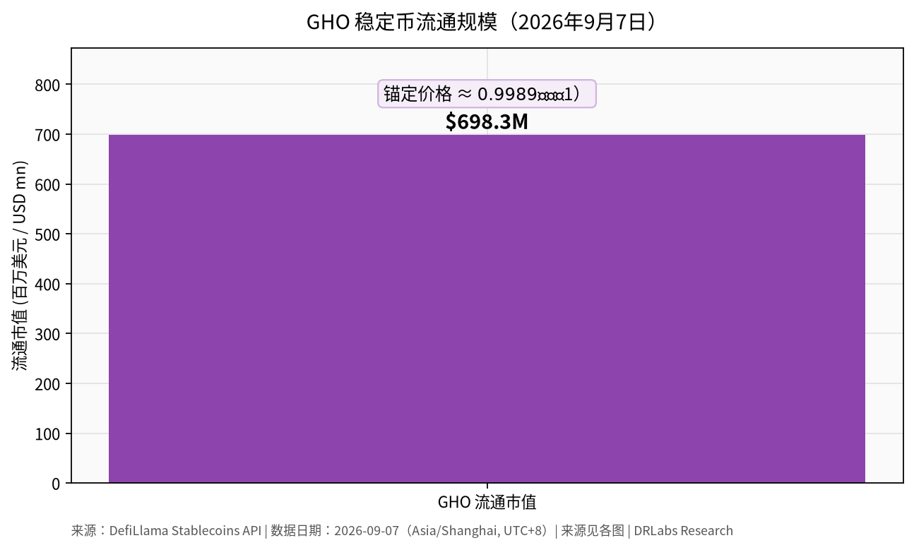
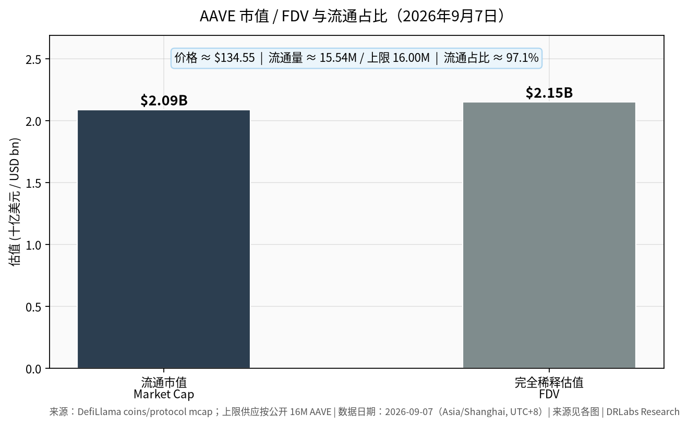
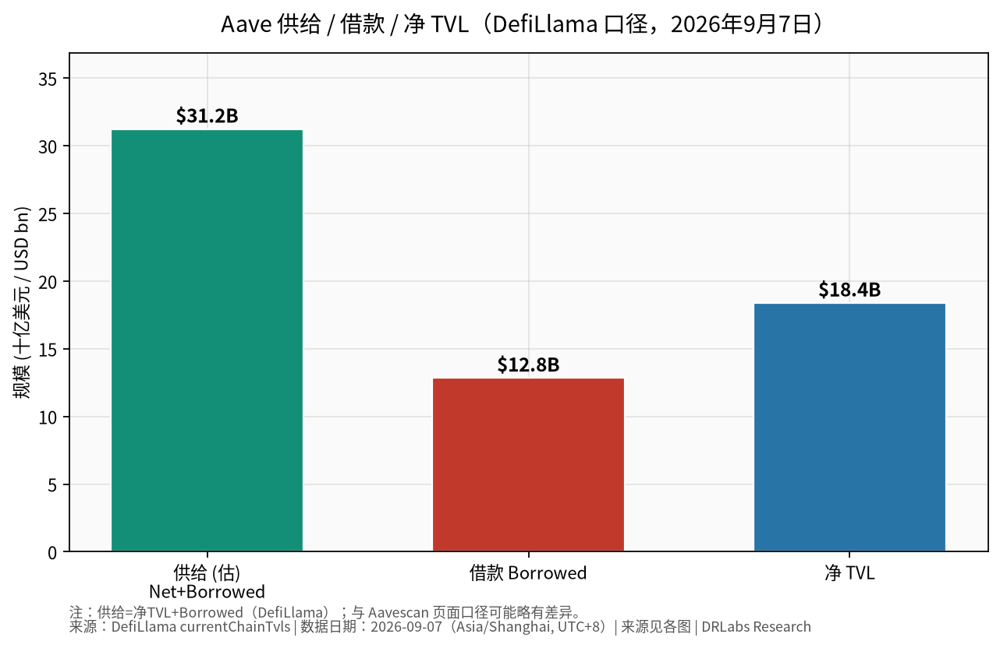
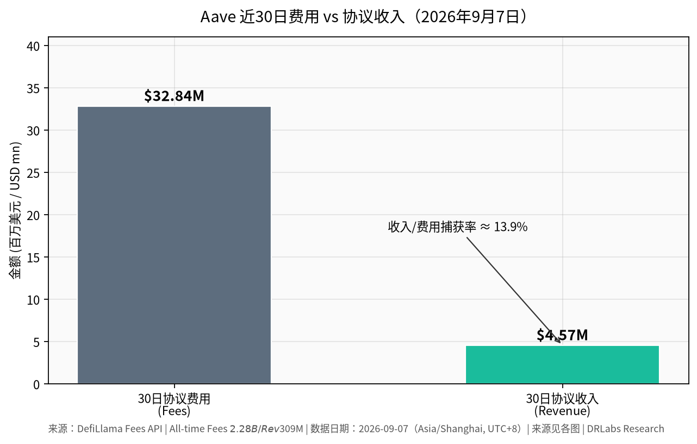
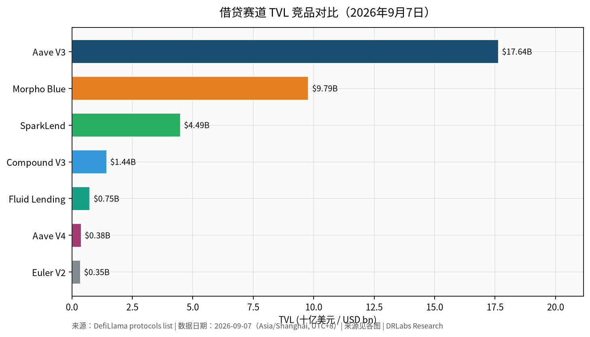

发布 2026年9月7日 · 数据 2026年9月7日 · AAVE · 6.7 / 10Published 7 Sep 2026 · as-of 7 Sep 2026 · AAVE · 6.7 / 10公開 2026年9月7日 · 基準 2026年9月7日 · AAVE · 6.7 / 10게시 2026년 9월 7일 · 기준 2026년 9월 7일 · AAVE · 6.7 / 10Publication 7 sept. 2026 · as-of 7 sept. 2026 · AAVE · 6.7 / 10Publicado 7 sep 2026 · as-of 7 sep 2026 · AAVE · 6.7 / 10Публикация 7 сен 2026 · as-of 7 сен 2026 · AAVE · 6.7 / 10
Aave（AAVE）项目研究报告
Aave (AAVE) research report
Aave (AAVE) リサーチレポート
Aave (AAVE) 리서치 리포트
Rapport de recherche Aave (AAVE)
Informe de investigación de Aave (AAVE)
Исследовательский отчёт по Aave (AAVE)
DRLabs 加密货币研究
DRLabs crypto research
DRLabs暗号資産リサーチ
DRLabs 암호화폐 리서치
Recherche crypto DRLabs
Investigación cripto de DRLabs
Криптоисследования DRLabs
发布 / 数据日期：2026年9月7日（Asia/Shanghai，UTC+8 / 用户当地 PT）
Published / data date: 7 September 2026 (Asia/Shanghai, UTC+8 / reader-local PT)
公開 / データ日付: 7 September 2026 (Asia/Shanghai, UTC+8 / 読者ローカルPT)
게시 / 데이터 일자: 2026년 9월 7일 (Asia/Shanghai, UTC+8 / 독자 현지 PT)
Date de publication / des données : 7 septembre 2026 (Asia/Shanghai, UTC+8 / PT local du lecteur)
Publicación / fecha de datos: 7 de septiembre de 2026 (Asia/Shanghai, UTC+8 / PT local del lector)
Дата публикации / данных: 7 сентября 2026 (Asia/Shanghai, UTC+8 / локальное PT читателя)
立场：中性偏研究（非投资建议）
Stance: research-neutral (not investment advice)
スタンス: リサーチ中立（投資助言ではない）
스탠스: 리서치 중립 (투자 자문 아님)
Position : neutre de recherche (pas un conseil en investissement)
Postura: neutra de investigación (no es asesoramiento de inversión)
Позиция: исследовательски нейтральная (не инвестиционная рекомендация)
一句话结论： Aave 仍是链上借贷赛道的绝对规模与品牌龙头，V3 承载主体流动性、V4（Hub & Spoke）已于 2026 年 3 月上线以太坊主网并处于保守放量阶段；基本面取决于利率周期、跨链份额与 DAO–Labs 治理对齐，而非短期代币价格叙事。
One-line takeaway: Aave is still the scale and brand leader in on-chain lending. V3 holds the bulk of liquidity; V4 (Hub & Spoke) went live on Ethereum mainnet in March 2026 and is still in a conservative-cap phase. Fundamentals hinge on the rate cycle, cross-chain share and DAO–Labs alignment — not a short-term token-price story.
一行の要点： Aaveは依然としてオンチェーンレンディングの規模とブランドの首位である。V3が流動性の大半を保持。V4（Hub & Spoke）は2026年3月にEthereumメインネットで稼働し、依然として保守的キャップ段階にある。ファンダメンタルは金利サイクル、クロスチェーンシェア、DAO–Labsの整合にかかっており、短期のトークン価格物語ではない。
한 줄 핵심: Aave는 여전히 온체인 대출의 규모·브랜드 선두이다. V3가 유동성의 대부분을 보유하고, V4 (Hub & Spoke)는 2026년 3월 Ethereum 메인넷에 출시되었으며 여전히 보수적 캡 단계이다. 펀더멘털의 핵심은 금리 사이클, 크로스체인 점유율, DAO–Labs 정렬이며 — 단기 토큰 가격 스토리가 아니다.
Synthèse en une ligne : Aave reste le leader en taille et en marque du lending on-chain. V3 détient l'essentiel de la liquidité ; V4 (Hub & Spoke) est live sur le mainnet Ethereum depuis mars 2026 et reste dans une phase de caps conservateurs. Les fondamentaux reposent sur le cycle des taux, la part cross-chain et l'alignement DAO–Labs — pas sur une histoire de prix de jeton à court terme.
Síntesis en una línea: Aave sigue siendo el líder de escala y de marca en lending on-chain. V3 concentra el grueso de la liquidez; V4 (Hub & Spoke) se lanzó en la mainnet de Ethereum en marzo de 2026 y aún está en una fase de caps conservadores. Los fundamentales dependen del ciclo de tipos, la cuota cross-chain y la alineación DAO–Labs — no de una historia de precio del token a corto plazo.
Вывод в одном предложении: Aave по-прежнему лидер по масштабу и бренду в ончейн-кредитовании. V3 держит основную долю ликвидности; V4 (Hub & Spoke) запущен в основной сети Ethereum в марте 2026 и всё ещё находится в фазе консервативных лимитов. Фундаментал определяется циклом ставок, кроссчейн-долей и согласованностью DAO–Labs — а не краткосрочной историей цены токена.
1. 项目概览
1. Project overview
1. プロジェクト概要
1. 프로젝트 개요
1. Présentation du projet
1. Panorama del proyecto
1. Обзор проекта
Aave 是去中心化、非托管的流动性协议：用户向资金池存入资产赚取利息，或以超额抵押方式借入资产；协议通过智能合约自动撮合供需、清算风险仓位，无需中介托管。名称源自芬兰语「幽灵」（ghost），寓意透明、无形的基础设施。
Aave is a decentralized, non-custodial liquidity protocol: users deposit assets into pools to earn interest, or borrow against over-collateralization. Smart contracts match supply and demand and liquidate risky positions without a custodian. The name comes from Finnish for “ghost”, a nod to transparent, invisible infrastructure.
Aaveは分散型・ノンカストディアルの流動性プロトコルである。ユーザーは資産をプールに預けて利息を得るか、超過担保に対して借り入れる。スマートコントラクトが需給をマッチングし、カストディアンなしでリスクポジションを清算する。名称はフィンランド語の「ghost（幽霊）」に由来し、透明で不可視のインフラを示唆する。
Aave는 탈중앙, 비수탁 유동성 프로토콜이다. 사용자는 자산 풀에 예치해 이자를 얻거나, 초과담보를 바탕으로 차입한다. 스마트 컨트랙트가 수급을 매칭하고 위험 포지션을 청산하며 수탁자는 없다. 이름은 핀란드어로 「유령」이며, 투명하고 보이지 않는 인프라를 가리킨다.
Aave est un protocole de liquidité décentralisé et non custodial : les utilisateurs déposent des actifs dans des pools pour gagner des intérêts, ou empruntent contre une surcollatéralisation. Les smart contracts apparient l'offre et la demande et liquident les positions risquées sans dépositaire. Le nom vient du finnois pour « ghost », un clin d'œil à une infrastructure transparente et invisible.
Aave es un protocolo de liquidez descentralizado y no custodial: los usuarios depositan activos en pools para ganar intereses, o piden prestado contra sobrecolateralización. Los smart contracts emparejan oferta y demanda y liquidan posiciones de riesgo sin un custodio. El nombre proviene del finlandés para “fantasma”, un guiño a una infraestructura transparente e invisible.
Aave — децентрализованный некастодиальный протокол ликвидности: пользователи вносят активы в пулы, чтобы получать процент, или занимают под избыточное обеспечение. Смарт-контракты сводят предложение и спрос и ликвидируют рискованные позиции без кастодиана. Название происходит от финского «призрак», отсылка к прозрачной, невидимой инфраструктуре.
解决的问题： 传统借贷依赖中介与信用审查，链上则长期面临流动性碎片化、抵押品与风险参数难以模块化扩展等问题。Aave 以资金池模型替代早期点对点撮合，并持续迭代风险隔离、跨链部署与原生稳定币（GHO）等能力。
Problem it solves: Traditional credit relies on intermediaries and underwriting. On-chain markets have long faced fragmented liquidity and collateral/risk parameters that are hard to extend modularly. Aave replaced early peer-to-peer matching with a pool model and kept iterating on risk isolation, multi-chain deployment and a native stablecoin (GHO).
解決する問題： 伝統的信用は仲介者と与信審査に依存する。オンチェーン市場は長年、分断された流動性と、モジュラーに拡張しにくい担保／リスクパラメータに直面してきた。Aaveは初期のピアツーピア・マッチングをプールモデルに置き換え、リスク分離、マルチチェーン展開、ネイティブステーブルコイン（GHO）を反復してきた。
해결하는 문제: 전통 신용은 중개자와 여신심사에 의존한다. 온체인 시장은 오랫동안 분절된 유동성과 모듈식으로 확장하기 어려운 담보/리스크 파라미터에 직면해 왔다. Aave는 초기 P2P 매칭을 풀 모델로 대체하고, 리스크 격리, 멀티체인 배포, 네이티브 스테이블코인 (GHO)을 계속 반복해 왔다.
Problème qu'il résout : Le crédit traditionnel s'appuie sur des intermédiaires et la souscription. Les marchés on-chain ont longtemps fait face à une liquidité fragmentée et à des paramètres de collatéral/risque difficiles à étendre de façon modulaire. Aave a remplacé l'appariement peer-to-peer initial par un modèle de pool et a continué d'itérer sur l'isolation des risques, le déploiement multi-chaînes et un stablecoin natif (GHO).
Problema que resuelve: El crédito tradicional depende de intermediarios y de underwriting. Los mercados on-chain han enfrentado durante mucho tiempo liquidez fragmentada y parámetros de colateral/riesgo difíciles de extender de forma modular. Aave sustituyó el emparejamiento peer-to-peer temprano por un modelo de pool y siguió iterando en aislamiento de riesgo, despliegue multi-cadena y una stablecoin nativa (GHO).
Решаемая проблема: Традиционный кредит опирается на посредников и андеррайтинг. Ончейн-рынки долго сталкивались с фрагментированной ликвидностью и параметрами обеспечения/риска, которые трудно расширять модульно. Aave заменил раннее peer-to-peer сопоставление моделью пула и продолжал итерации по изоляции риска, мультичейн-развёртыванию и нативному стейблкоину (GHO).
定位： DeFi 核心「货币市场」基础设施；按 DefiLlama 口径，Aave 系列（尤其 V3）长期占据借贷类 TVL 首位。官方称累计放贷规模已超过 1 万亿美元量级，并宣称在去中心化借贷市场中占有过半份额（以官方博客口径，需与第三方 TVL 份额交叉验证）。
Positioning: Core DeFi “money market” infrastructure. On DefiLlama, the Aave family (especially V3) has long led lending TVL. Official materials claim cumulative originations above the $1 trillion mark and more than half of decentralized lending (official-blog definition — cross-check against third-party TVL share).
位置づけ： コアDeFiの「マネーマーケット」インフラ。DefiLlama上でAaveファミリー（とりわけV3）は長らくレンディングTVLを主導してきた。公式資料は累計組成が$1 trillion超、分散型レンディングの過半を占めると主張する（公式ブログの定義——第三者TVLシェアと照合すること）。
포지셔닝: 핵심 DeFi 「머니 마켓」 인프라. DefiLlama에서 Aave 패밀리(특히 V3)는 오랫동안 대출 TVL을 선도해 왔다. 공식 자료는 누적 취급액이 $1 trillion을 넘고 탈중앙 대출의 절반 이상을 차지한다고 주장한다 (공식 블로그 정의 — 제3자 TVL 점유율과 교차 확인).
Positionnement : Infrastructure « money market » DeFi de base. Sur DefiLlama, la famille Aave (surtout V3) mène depuis longtemps la TVL de lending. Les documents officiels revendiquent des originations cumulées au-dessus du seuil de $1 trillion et plus de la moitié du lending décentralisé (définition du blog officiel — à recouper avec la part de TVL tierce).
Posicionamiento: Infraestructura central de “money market” DeFi. En DefiLlama, la familia Aave (sobre todo V3) ha liderado durante mucho tiempo el TVL de lending. Los materiales oficiales reivindican originaciones acumuladas por encima de la marca de $1 trillion y más de la mitad del lending descentralizado (definición del blog oficial — contrastar con la cuota de TVL de terceros).
Позиционирование: Базовая DeFi-инфраструктура «денежного рынка». На DefiLlama семейство Aave (особенно V3) долго лидирует по TVL кредитования. Официальные материалы заявляют совокупные выдачи выше отметки $1 trillion и более половины децентрализованного кредитования (определение официального блога — сверять с долей TVL у третьих сторон).
简史： 2017 年由 Stani Kulechov（现 Aave Labs CEO）以 ETHLend 启动点对点借贷；后转型流动性池并更名 Aave，约 2020 年初在以太坊主网上线；2020 年 10 月 LEND 按 100:1 迁移为治理代币 AAVE。此后经历 V2、多链 V3、GHO、Safety Module→Umbrella，以及 2026 年 V4 主网上线。
Brief history: In 2017 Stani Kulechov (now Aave Labs CEO) launched peer-to-peer lending as ETHLend; the project later moved to liquidity pools, rebranded to Aave, and went live on Ethereum mainnet around early 2020. In October 2020 LEND migrated 100:1 into the AAVE governance token. Then came V2, multi-chain V3, GHO, Safety Module→Umbrella, and the 2026 V4 mainnet launch.
沿革： 2017年、Stani Kulechov（現Aave Labs CEO）がETHLendとしてピアツーピアレンディングを開始。その後プロジェクトは流動性プールへ移行し、Aaveにリブランディングし、2020年初頭頃にEthereumメインネットで稼働した。2020年10月、LENDは100:1でAAVEガバナンストークンへ移行。続いてV2、マルチチェーンV3、GHO、Safety Module→Umbrella、2026年のV4メインネットローンチ。
약사: 2017년 Stani Kulechov (현 Aave Labs CEO)가 ETHLend로 P2P 대출을 출시했고, 이후 유동성 풀로 이동해 Aave로 리브랜딩했으며 2020년 초 Ethereum 메인넷에 올렸다. 2020년 10월 LEND가 100:1로 AAVE 거버넌스 토큰으로 마이그레이션되었다. 이어서 V2, 멀티체인 V3, GHO, Safety Module→Umbrella, 2026년 V4 메인넷 출시가 이어졌다.
Bref historique : En 2017, Stani Kulechov (aujourd'hui CEO d'Aave Labs) a lancé le lending peer-to-peer sous le nom ETHLend ; le projet est ensuite passé aux pools de liquidité, a été rebrandé en Aave, et est allé live sur le mainnet Ethereum vers début 2020. En octobre 2020, LEND a migré 100:1 vers le jeton de gouvernance AAVE. Puis sont venus V2, V3 multi-chaînes, GHO, Safety Module→Umbrella, et le lancement mainnet de V4 en 2026.
Historia breve: En 2017 Stani Kulechov (hoy CEO de Aave Labs) lanzó lending peer-to-peer como ETHLend; el proyecto pasó luego a pools de liquidez, se rebrandó a Aave y salió en la mainnet de Ethereum hacia principios de 2020. En octubre de 2020 LEND migró 100:1 al token de gobernanza AAVE. Luego llegaron V2, V3 multi-cadena, GHO, Safety Module→Umbrella y el lanzamiento de V4 en mainnet en 2026.
Краткая история: В 2017 Stani Kulechov (ныне CEO Aave Labs) запустил peer-to-peer кредитование как ETHLend; проект позднее перешёл к пулам ликвидности, ребрендировался в Aave и вышел в основную сеть Ethereum около начала 2020. В октябре 2020 LEND мигрировал 100:1 в токен управления AAVE. Затем появились V2, мультичейн V3, GHO, Safety Module→Umbrella и запуск мейннета V4 в 2026.
2. 产品与机制
2. Product and mechanics
2. プロダクトと仕組み
2. 제품과 메커니즘
2. Produit et mécanismes
2. Producto y mecánica
2. Продукт и механика
2.1 借贷市场与利率模型
2.1 Lending markets and the rate model
2.1 レンディング市場と金利モデル
2.1 대출 시장과 금리 모델
2.1 Marchés de lending et modèle de taux
2.1 Mercados de lending y el modelo de tipos
2.1 Кредитные рынки и модель ставок
- 供给/借款： 用户供给资产获得生息凭证；借款需超额抵押，利率由利用率驱动的曲线决定（最优利用率以下斜率较缓，以上陡峭），供给利率由借款利息扣除协议费用后分摊。
- V3 架构： 按市场（market）隔离流动性（如以太坊 Core / Prime）。同一链上不同市场之间资金互不复用，利于风险隔离，但新市场需独立引导流动性。
- eMode（Efficiency Mode）： 对价格高度相关资产（如稳定币对、ETH/LST）提高借款能力，提升资本效率。
- aToken： V3 中供给凭证多为 rebasing 的 aToken，余额随利息增长；可在生态中作为组合乐高使用。
- Supply / borrow: Suppliers receive interest-bearing receipts. Borrowing requires over-collateralization. Rates follow a utilization curve (flatter below optimal utilization, steep above). Supply rates are borrower interest minus protocol fees, shared among suppliers.
- V3 architecture: Liquidity is isolated by market (e.g. Ethereum Core / Prime). Pools on the same chain do not reuse funds across markets — better risk isolation, but new markets must bootstrap liquidity on their own.
- eMode (Efficiency Mode): Raises borrowing power for highly correlated assets (stable pairs, ETH/LST) and improves capital efficiency.
- aToken: V3 supply receipts are mostly rebasing aTokens; balances grow with interest and can be composed elsewhere in DeFi.
- サプライ / 借入： サプライヤーは利息付きレシートを受け取る。借入には超過担保が必要。金利は稼働率カーブに従う（最適稼働率未満では平坦、それを超えると急峻）。サプライ金利は借り手金利からプロトコル手数料を差し引き、サプライヤー間で分配される。
- V3アーキテクチャ： 流動性は市場ごとに分離される（例：Ethereum Core / Prime）。同一チェーン上のプールでも市場をまたいで資金を再利用しない——リスク分離は改善するが、新市場は自ら流動性を立ち上げる必要がある。
- eMode (Efficiency Mode)： 高相関資産（ステーブルペア、ETH/LST）の借入能力を引き上げ、資本効率を改善する。
- aToken： V3のサプライレシートは主にリベーシングaToken。残高は利息とともに増加し、DeFiの他箇所で組成できる。
- Supply / borrow: 공급자는 이자부 증서를 받는다. 차입은 초과담보가 필요하다. 금리는 이용률 곡선을 따른다 (최적 이용률 아래는 평탄, 위는 가파름). 공급 금리는 차입자 이자에서 프로토콜 수수료를 뺀 뒤 공급자 간에 나눈다.
- V3 architecture: 유동성은 시장별로 격리된다 (예: Ethereum Core / Prime). 같은 체인의 풀도 시장 간에 자금을 재사용하지 않는다 — 리스크 격리는 나아지지만, 신규 시장은 스스로 유동성을 부트스트랩해야 한다.
- eMode (Efficiency Mode): 상관관계가 높은 자산 (스테이블 페어, ETH/LST)의 차입력을 높이고 자본 효율을 개선한다.
- aToken: V3 공급 증서는 대부분 리베이싱 aToken이며, 잔액이 이자와 함께 증가하고 DeFi 다른 곳에서 조합될 수 있다.
- Offre / emprunt : Les fournisseurs reçoivent des reçus portant intérêt. L'emprunt exige une surcollatéralisation. Les taux suivent une courbe d'utilisation (plus plate sous l'utilisation optimale, raide au-dessus). Les taux d'offre sont l'intérêt des emprunteurs moins les frais de protocole, partagés entre les fournisseurs.
- Architecture V3 : La liquidité est isolée par marché (p. ex. Ethereum Core / Prime). Les pools sur une même chaîne ne réutilisent pas les fonds entre marchés — meilleure isolation des risques, mais les nouveaux marchés doivent bootstraper leur liquidité seuls.
- eMode (Efficiency Mode) : Augmente le pouvoir d'emprunt pour les actifs fortement corrélés (paires stables, ETH/LST) et améliore l'efficacité du capital.
- aToken : Les reçus d'offre V3 sont surtout des aTokens rebasing ; les soldes croissent avec les intérêts et peuvent être composés ailleurs dans le DeFi.
- Supply / borrow: Los suppliers reciben recibos que generan intereses. El borrowing exige sobrecolateralización. Los tipos siguen una curva de utilización (más plana por debajo de la utilización óptima, empinada por encima). Los tipos de supply son el interés del borrower menos las comisiones del protocolo, compartidos entre suppliers.
- Arquitectura V3: La liquidez se aísla por mercado (p. ej. Ethereum Core / Prime). Los pools en la misma cadena no reutilizan fondos entre mercados — mejor aislamiento de riesgo, pero los mercados nuevos deben bootstrapear liquidez por su cuenta.
- eMode (Efficiency Mode): Eleva la capacidad de borrowing para activos altamente correlacionados (pares estables, ETH/LST) y mejora la eficiencia de capital.
- aToken: Los recibos de supply de V3 son en su mayoría aTokens rebasing; los saldos crecen con el interés y pueden componerse en otros puntos de DeFi.
- Supply / borrow: Поставщики получают процентные расписки. Заимствование требует избыточного обеспечения. Ставки следуют кривой утилизации (более пологая ниже оптимальной утилизации, крутая выше). Ставки предложения — процент заёмщика минус комиссии протокола, распределяемые среди поставщиков.
- Архитектура V3: Ликвидность изолирована по рынкам (например, Ethereum Core / Prime). Пулы в одной сети не переиспользуют средства между рынками — лучше изоляция риска, но новые рынки должны самостоятельно набирать ликвидность.
- eMode (Efficiency Mode): Повышает заёмную силу для сильно коррелированных активов (стейбл-пары, ETH/LST) и улучшает эффективность капитала.
- aToken: Расписки предложения V3 в основном rebasing aToken; балансы растут с процентом и могут быть скомпонованы в другом DeFi.
2.2 清算
2.2 Liquidations
2.2 清算
2.2 청산
2.2 Liquidations
2.2 Liquidaciones
2.2 Ликвидации
仓位健康因子（Health Factor）低于 1 可被清算。清算人偿还部分债务并获得抵押品与清算奖励。协议依赖预言机价格；极端行情下清算拥堵、坏账与预言机延迟是核心尾部风险。
Positions with Health Factor below 1 can be liquidated. Liquidators repay part of the debt and receive collateral plus a bonus. The protocol depends on oracle prices; liquidation congestion, bad debt and oracle lag are the core tail risks in stress.
Health Factorが1を下回るポジションは清算されうる。清算者は債務の一部を返済し、担保にボーナスを加えて受け取る。プロトコルはオラクル価格に依存する。清算渋滞、不良債権、オラクル遅延がストレス時の中核テールリスクである。
Health Factor가 1 미만인 포지션은 청산될 수 있다. 청산자는 부채의 일부를 상환하고 담보와 보너스를 받는다. 프로토콜은 오라클 가격에 의존하며, 청산 혼잡, 대손, 오라클 지연이 스트레스 국면의 핵심 테일 리스크이다.
Les positions dont le Health Factor est inférieur à 1 peuvent être liquidées. Les liquidateurs remboursent une partie de la dette et reçoivent du collatéral plus un bonus. Le protocole dépend des prix d'oracles ; la congestion des liquidations, la bad debt et le lag des oracles sont les risques de queue centraux en stress.
Las posiciones con Health Factor por debajo de 1 pueden liquidarse. Los liquidadores pagan parte de la deuda y reciben colateral más un bono. El protocolo depende de precios de oráculos; la congestión de liquidaciones, la deuda incobrable y el lag de oráculos son los riesgos de cola centrales en estrés.
Позиции с Health Factor ниже 1 могут быть ликвидированы. Ликвидаторы погашают часть долга и получают обеспечение плюс бонус. Протокол зависит от цен оракулов; перегрузка ликвидаций, плохой долг и лаг оракула — ключевые хвостовые риски в стрессе.
2.3 Aave V4（现状以官方为准）
2.3 Aave V4 (status per official sources)
2.3 Aave V4（公式ソースに基づく現状）
2.3 Aave V4 (공식 출처 기준 현황)
2.3 Aave V4 (statut selon les sources officielles)
2.3 Aave V4 (estado según fuentes oficiales)
2.3 Aave V4 (статус по официальным источникам)
上线时间： 官方博客标注 2026 年 3 月 30 日 V4 在以太坊主网上线。
Launch: Official blog dated 30 March 2026 for V4 on Ethereum mainnet.
ローンチ： 公式ブログ日付30 March 2026、EthereumメインネットでV4。
출시: 공식 블로그 일자 30 March 2026, Ethereum 메인넷 V4.
Lancement : Blog officiel daté du 30 mars 2026 pour V4 sur le mainnet Ethereum.
Lanzamiento: Blog oficial con fecha 30 March 2026 para V4 en la mainnet de Ethereum.
Запуск: Официальный блог датирован 30 марта 2026 для V4 в основной сети Ethereum.
核心变化 — Hub & Spoke：
Core change — Hub & Spoke:
中核の変更 — Hub & Spoke：
핵심 변화 — Hub & Spoke:
Changement central — Hub & Spoke :
Cambio central — Hub & Spoke:
Ключевое изменение — Hub & Spoke:
| 组件 Component | 作用 Role |
|---|---|
| Liquidity Hub | 链上统一流动性与会计中枢；对 Spoke 设定 credit/debit 额度 On-chain unified liquidity and accounting hub; sets credit/debit limits for Spokes |
| Spoke | 用户交互入口；可配置独立抵押品、风险参数与清算规则 User-facing entry; can set its own collateral, risk parameters and liquidation rules |
| Risk Premium | 在基础利用率利率之上，按抵押品质量加收借款溢价 Extra borrow premium on top of the utilization rate, by collateral quality |
| 清算引擎 Liquidation engine | 以 Target Health Factor 替代固定 close factor；可变清算奖励；dust 防尘规则 Target Health Factor replaces a fixed close factor; variable bonuses; dust rules |
官方说明：V4 启动时配备多个 Liquidity Hub（如 Core / Prime / Plus 等叙事），供给与借款上限刻意保守，由 DAO 观察生产环境后逐步调高。界面侧推出面向 V4 的 Aave Pro。安全方面，官方称约 345 累计审计日、多家审计机构及 Sherlock 公开竞赛等（详见审计仓库）。
Official note: V4 launched with several Liquidity Hubs (Core / Prime / Plus and similar narratives). Supply and borrow caps were deliberately conservative, to be raised by the DAO after watching production. The UI side launched Aave Pro for V4. On security, official materials cite about 345 cumulative audit days, multiple firms and a Sherlock public contest (see the audit repo).
公式注記：V4は複数のLiquidity Hub（Core / Prime / Plusおよび類似のナラティブ）でローンチした。サプライおよび借入キャップは意図的に保守的であり、本番を見た後にDAOが引き上げる。UI側ではV4向けにAave Proをローンチした。セキュリティ面では、公式資料は累計約345監査日、複数ファーム、Sherlock公開コンテストを挙げる（監査リポジトリを参照）。
공식 설명: V4는 여러 Liquidity Hub (Core / Prime / Plus 및 유사 내러티브)와 함께 출시되었다. 공급·차입 캡은 의도적으로 보수적이었고, 프로덕션을 본 뒤 DAO가 상향한다. UI 측은 V4용 Aave Pro를 출시했다. 보안에서 공식 자료는 누적 감사 약 345일, 복수 펌, Sherlock 공개 콘테스트를 인용한다 (감사 저장소 참조).
Note officielle : V4 a été lancée avec plusieurs Liquidity Hubs (Core / Prime / Plus et narratifs similaires). Les caps d'offre et d'emprunt étaient délibérément conservateurs, à relever par la DAO après observation en production. Côté UI, Aave Pro a été lancé pour V4. Sur la sécurité, les documents officiels citent environ 345 jours d'audit cumulés, plusieurs cabinets et un contest public Sherlock (voir le repo d'audit).
Nota oficial: V4 se lanzó con varios Liquidity Hubs (narrativas Core / Prime / Plus y similares). Los caps de supply y borrow fueron deliberadamente conservadores, para que el DAO los eleve tras observar producción. En el lado de UI se lanzó Aave Pro para V4. En seguridad, los materiales oficiales citan unos 345 días acumulados de auditoría, varias firmas y un concurso público de Sherlock (véase el repo de auditorías).
Официальное примечание: V4 запущен с несколькими Liquidity Hubs (нарративы Core / Prime / Plus и аналогичные). Лимиты supply и borrow были намеренно консервативными, чтобы DAO повысил их после наблюдения продакшена. На стороне UI запущен Aave Pro для V4. По безопасности официальные материалы указывают около 345 совокупных аудиторских дней, несколько фирм и публичный конкурс Sherlock (см. репозиторий аудитов).
会计凭证： 社区与技术解读普遍提到 V4 向 ERC-4626 份额型会计演进（相对 V3 rebasing aToken）；具体产品体验以官方文档与 UI 为准。
Accounting: Community and technical write-ups generally describe V4 moving toward ERC-4626 share accounting (versus V3 rebasing aTokens). Product UX follows official docs and the UI.
会計： コミュニティおよび技術解説は概して、V4がERC-4626シェア会計へ移行すると述べる（V3のリベーシングaToken対比）。プロダクトUXは公式ドキュメントとUIに従う。
회계: 커뮤니티·기술 글은 대체로 V4가 ERC-4626 지분 회계로 이동한다고 설명한다 (V3 리베이싱 aToken 대비). 제품 UX는 공식 문서와 UI를 따른다.
Comptabilité : Les notes communautaires et techniques décrivent généralement V4 comme allant vers une comptabilité de parts ERC-4626 (versus les aTokens rebasing de V3). L'UX produit suit les docs officielles et l'UI.
Contabilidad: Los escritos comunitarios y técnicos describen en general que V4 se mueve hacia contabilidad de shares ERC-4626 (frente a aTokens rebasing de V3). El UX de producto sigue la documentación oficial y la UI.
Учёт: Сообщество и технические обзоры в целом описывают переход V4 к учёту долей ERC-4626 (против rebasing aToken в V3). Продуктовый UX следует официальной документации и UI.
与 V3 关系： 官方与治理材料明确 V3 在仍有需要时将继续运行；V4 为下一代统一流动性架构，迁移与份额切换是中长期过程。
Relationship to V3: Official and governance materials are explicit that V3 will keep running as long as it is needed. V4 is the next unified-liquidity architecture; migration and share shift are a medium-term process.
V3との関係： 公式およびガバナンス資料は、必要である限りV3は稼働を続けると明示している。V4は次の統一流動性アーキテクチャであり、移行とシェア移転は中期プロセスである。
V3와의 관계: 공식·거버넌스 자료는 필요한 한 V3가 계속 운영된다고 명시한다. V4는 다음 통합 유동성 아키텍처이며, 마이그레이션과 점유율 이동은 중기 과정이다.
Relation avec V3 : Les documents officiels et de gouvernance sont explicites : V3 continuera de fonctionner aussi longtemps que nécessaire. V4 est la prochaine architecture de liquidité unifiée ; la migration et le glissement de parts sont un processus de moyen terme.
Relación con V3: Los materiales oficiales y de gobernanza son explícitos en que V3 seguirá funcionando mientras se necesite. V4 es la siguiente arquitectura de liquidez unificada; la migración y el desplazamiento de cuota son un proceso de medio plazo.
Отношение к V3: Официальные и governance-материалы явно указывают, что V3 будет работать, пока это нужно. V4 — следующая архитектура унифицированной ликвидности; миграция и сдвиг доли — среднесрочный процесс.
2.4 跨链部署
2.4 Multi-chain deployment
2.4 マルチチェーン展開
2.4 멀티체인 배포
2.4 Déploiement multi-chaînes
2.4 Despliegue multi-cadena
2.4 Мультичейн-развёртывание
Aave 已部署于以太坊及多条 L2/侧链与新兴 L1（DefiLlama 链分布见下文）。V4 官方路线图为：以太坊主网验证后，由 DAO 扩展 Spoke、调高 caps，并推进更多网络。
Aave is live on Ethereum plus multiple L2s/sidechains and newer L1s (DefiLlama chain mix below). The official V4 path: prove it on Ethereum mainnet, then let the DAO add Spokes, raise caps, and push more networks.
AaveはEthereumに加え、複数のL2／サイドチェーンおよび新しいL1で稼働している（下記DefiLlamaチェーン構成）。公式のV4経路：Ethereumメインネットで実証し、その後DAOがSpoke追加、キャップ引き上げ、より多くのネットワークへの展開を進める。
Aave는 Ethereum과 다수의 L2/사이드체인, 신규 L1에서 가동 중이다 (아래 DefiLlama 체인 믹스). 공식 V4 경로: Ethereum 메인넷에서 증명한 뒤, DAO가 Spoke를 추가하고 캡을 올리고 더 많은 네트워크로 밀어낸다.
Aave est live sur Ethereum plus plusieurs L2/sidechains et L1 plus récentes (mix de chaînes DefiLlama ci-dessous). La trajectoire officielle de V4 : la prouver sur le mainnet Ethereum, puis laisser la DAO ajouter des Spokes, relever les caps, et pousser d'autres réseaux.
Aave está live en Ethereum más múltiples L2s/sidechains y L1s más nuevas (mix de cadenas de DefiLlama más abajo). La ruta oficial de V4: probarlo en la mainnet de Ethereum, luego dejar que el DAO añada Spokes, eleve caps y empuje más redes.
Aave работает в Ethereum плюс нескольких L2/сайдчейнах и более новых L1 (микс сетей DefiLlama ниже). Официальный путь V4: доказать на основной сети Ethereum, затем дать DAO добавлять Spokes, повышать лимиты и выводить на новые сети.
2.5 GHO 与储蓄产品
2.5 GHO and savings products
2.5 GHOと貯蓄プロダクト
2.5 GHO와 저축 상품
2.5 GHO et produits d'épargne
2.5 GHO y productos de ahorro
2.5 GHO и сберегательные продукты
GHO 为 Aave 生态原生、超额抵押的美元锚定稳定币：用户以抵押品铸造（借款）GHO，偿还时销毁；借款利息主要流向 DAO 财库。据 DefiLlama 稳定币数据，2026年9月7日 前后 GHO 流通市值约 6.98 亿美元，价格约 $0.999，贴近 $1。
GHO is Aave’s native, over-collateralized USD-pegged stablecoin: users mint (borrow) GHO against collateral and burn it on repay. Borrow interest mostly flows to the DAO treasury. DefiLlama stablecoin data around 7 September 2026 puts GHO circulating market cap at about $698 million, price about $0.999, close to $1.
GHOはAaveのネイティブ超過担保USDペッグステーブルコインである。ユーザーは担保に対してGHOをミント（借入）し、返済時にバーンする。借入利息の大半はDAOトレジャリーへ流れる。DefiLlamaのステーブルコインデータは7 September 2026前後で、GHO流通時価総額を約$698 million、価格約$0.999、$1近傍とする。
GHO는 Aave의 네이티브, 초과담보 USD 페그 스테이블코인이다. 사용자는 담보에 대해 GHO를 발행(차입)하고 상환 시 소각한다. 차입 이자는 대부분 DAO 재무로 흐른다. DefiLlama 스테이블코인 데이터는 7 September 2026 전후 GHO 유통 시가총액을 약 $698 million, 가격 약 $0.999, $1에 가깝다고 본다.
GHO est le stablecoin natif d'Aave, surcollatéralisé et peggé sur l'USD : les utilisateurs mintent (empruntent) du GHO contre du collatéral et le brûlent au remboursement. L'intérêt d'emprunt va surtout à la trésorerie de la DAO. Les données stablecoins DefiLlama autour du 7 septembre 2026 placent la capitalisation circulante de GHO à environ $698 million, le prix à environ $0.999, proche de $1.
GHO es la stablecoin nativa de Aave, sobrecolateralizada y pegada al USD: los usuarios mintean (borrow) GHO contra colateral y lo queman al devolver. El interés de borrow fluye en su mayor parte a la tesorería del DAO. Los datos de stablecoins de DefiLlama alrededor del 7 September 2026 sitúan el mcap circulante de GHO en unos $698 million, precio de unos $0.999, cerca de $1.
GHO — нативный избыточно обеспеченный стейблкоин Aave с привязкой к USD: пользователи минтят (занимают) GHO под обеспечение и сжигают его при погашении. Процент по займу в основном идёт в казну DAO. Данные DefiLlama по стейблкоинам около 7 сентября 2026 ставят циркулирующую капитализацию GHO около $698 million, цену около $0.999, близко к $1.

解读： GHO 已形成近 7 亿美元流通体量，锚定尚稳；但相对 USDT/USDC 及新兴收益型稳定币仍属中小规模，增长取决于借款需求、sGHO 储蓄竞争力与跨链流动性。
Read: GHO has a near-$700 million float and a stable peg so far. Versus USDT/USDC and newer yield-bearing stables it is still mid-sized. Growth depends on borrow demand, sGHO competitiveness and cross-chain liquidity.
読み： GHOは約$700 millionのフロートとこれまでの安定ペッグを持つ。USDT/USDCおよび新しい利回り付きステーブル対比では依然ミッドサイズ。成長は借入需要、sGHOの競争力、クロスチェーン流動性に依存する。
해석: GHO는 약 $700 million 플로트와 지금까지 안정적인 페그를 갖고 있다. USDT/USDC 및 신규 이자부 스테이블 대비 여전히 중형이다. 성장은 차입 수요, sGHO 경쟁력, 크로스체인 유동성에 달려 있다.
Lecture : GHO a un flottant proche de $700 million et un peg stable jusqu'ici. Versus USDT/USDC et les stables yield-bearing plus récents, il reste de taille moyenne. La croissance dépend de la demande d'emprunt, de la compétitivité de sGHO et de la liquidité cross-chain.
Lectura: GHO tiene un flotante cercano a $700 million y un peg estable hasta ahora. Frente a USDT/USDC y las stables más nuevas que generan yield sigue siendo de tamaño medio. El crecimiento depende de la demanda de borrow, la competitividad de sGHO y la liquidez cross-chain.
Прочтение: У GHO объём в обращении около $700 million и пока стабильный peg. Против USDT/USDC и более новых yield-bearing стейблов он всё ещё среднего размера. Рост зависит от спроса на займы, конкурентоспособности sGHO и кроссчейн-ликвидности.
sGHO / Aave Savings Rate（ASR）： 治理将储蓄侧产品向 ERC-4626 合规 vault（sGHO）迁移；GHO Stewards 2026 年 8 月提案中，讨论将 ASR 上调至约 4.50%（并同步上调部分链上 GHO 借款利率），以应对竞争储蓄率与留存需求。具体执行以链上参数与 UI 为准。
sGHO / Aave Savings Rate (ASR): Governance is moving the savings side to an ERC-4626 vault (sGHO). In an August 2026 GHO Stewards proposal, ASR was discussed at about 4.50% (with some chain GHO borrow rates raised in parallel) to match competing savings rates and retention. Execution follows on-chain parameters and the UI.
sGHO / Aave Savings Rate (ASR)： ガバナンスは貯蓄側をERC-4626ボルト（sGHO）へ移している。2026年8月のGHO Stewards提案では、ASRは約4.50%で議論された（一部チェーンのGHO借入金利も並行して引き上げ）——競合する貯蓄金利とリテンションに合わせるため。執行はオンチェーンパラメータとUIに従う。
sGHO / Aave Savings Rate (ASR): 거버넌스는 저축 쪽을 ERC-4626 볼트 (sGHO)로 옮기고 있다. 2026년 8월 GHO Stewards 제안에서 ASR은 약 4.50%로 논의되었고 (일부 체인 GHO 차입 금리는 병행 인상), 경쟁 저축 금리와 리텐션에 맞추려는 취지이다. 실행은 온체인 파라미터와 UI를 따른다.
sGHO / Aave Savings Rate (ASR) : La gouvernance déplace le volet épargne vers un vault ERC-4626 (sGHO). Dans une proposition GHO Stewards d'août 2026, l'ASR a été discuté autour de 4.50% (avec certains taux d'emprunt GHO relevés en parallèle) pour matcher les taux d'épargne concurrents et la rétention. L'exécution suit les paramètres on-chain et l'UI.
sGHO / Aave Savings Rate (ASR): La gobernanza está moviendo el lado de ahorro a un vault ERC-4626 (sGHO). En una propuesta de GHO Stewards de agosto de 2026, el ASR se discutió en unos 4.50% (con algunos tipos de borrow de GHO por cadena elevados en paralelo) para igualar tipos de ahorro competidores y la retención. La ejecución sigue los parámetros on-chain y la UI.
sGHO / Aave Savings Rate (ASR): Управление переводит сберегательную сторону в хранилище ERC-4626 (sGHO). В предложении GHO Stewards августа 2026 ASR обсуждался около 4.50% (параллельно на некоторых сетях повышались ставки займа GHO), чтобы соответствовать конкурирующим сберегательным ставкам и удержанию. Исполнение следует ончейн-параметрам и UI.
GSM 等稳定机制： 用于锚定维护与流动性缓冲；稳定币脱锚、跨链价差与利率错配仍是产品层风险点。
GSM and other stability tools: Used for peg defense and liquidity buffers. Depegs, cross-chain basis and rate mismatch remain product-level risks.
GSMおよびその他の安定化ツール： ペッグ防衛と流動性バッファに用いる。デペッグ、クロスチェーンベーシス、金利ミスマッチはプロダクトレベルのリスクとして残る。
GSM 및 기타 안정화 도구: 페그 방어와 유동성 버퍼에 쓰인다. 디페그, 크로스체인 베이시스, 금리 불일치는 여전히 제품 수준 리스크이다.
GSM et autres outils de stabilité : Utilisés pour la défense du peg et les buffers de liquidité. Les depegs, le basis cross-chain et le décalage de taux restent des risques au niveau produit.
GSM y otras herramientas de estabilidad: Se usan para defensa del peg y buffers de liquidez. Los depegs, la basis cross-chain y el desajuste de tipos siguen siendo riesgos a nivel de producto.
GSM и другие инструменты стабильности: Используются для защиты peg и буферов ликвидности. Депеги, кроссчейн-базис и расхождение ставок остаются продуктовыми рисками.
3. 代币经济（AAVE）
3. Token economics (AAVE)
3. トークン経済（AAVE）
3. 토큰 이코노믹스 (AAVE)
3. Économie du jeton (AAVE)
3. Economía del token (AAVE)
3. Токеномика (AAVE)
| 项目 Item | 数据（2026年9月7日） Data (7 September 2026) | 来源 Source |
|---|---|---|
| 最大/总供应 Max / total supply | 16,000,000 AAVE | 公开代币参数 / Etherscan Public token params / Etherscan |
| 流通量（推算） Circulating (implied) | 约 15.54M（约 97.1%） ~15.54M (~97.1%) | DefiLlama 市值 ÷ 现价 DefiLlama mcap ÷ spot |
| 价格 Price | 约 $134.55 ~$134.55 | DefiLlama coins API |
| 流通市值 Circulating mcap | 约 $20.9 亿 ~$2.09B | DefiLlama protocol mcap |
| FDV（按 16M） FDV (at 16M) | 约 $21.5 亿 ~$2.15B | 现价 × 上限供应 Spot × max supply |
| 30 日涨跌 30-day change | 约 +49%（研报初稿 CoinGecko 口径；当日 API 限流未复核） ~+49% (draft CoinGecko print; not re-checked after API throttle) | CoinGecko（历史引用） CoinGecko (historical cite) |
| 1 年涨跌 1-year change | 约 −55%（同上） ~−55% (same) | CoinGecko（历史引用） CoinGecko (historical cite) |

解读： 流通占比已接近完全稀释，市值与 FDV 差距很小（约 3%），传统「解锁抛压」叙事较弱；代币弹性更多来自治理溢价、DAO 收入归集预期与市场风险偏好，而非供给收缩。
Read: Circulation is close to fully diluted; mcap and FDV gap is small (~3%). The usual “unlock overhang” story is weak. Token elasticity comes more from governance premium, expected DAO revenue and risk appetite than from supply squeeze.
読み： 流通はほぼ完全希薄化に近い。時価総額とFDVの差は小さい（約3%）。通常の「アンロック上乗せ」物語は弱い。トークンの弾力性は供給逼迫よりも、ガバナンスプレミアム、期待DAO収益、リスク選好から来る。
해석: 유통은 완전 희석에 가깝고, 시가총액과 FDV 갭은 작다 (~3%). 통상적인 「언락 오버행」 스토리는 약하다. 토큰 탄력성은 공급 압박보다 거버넌스 프리미엄, 기대 DAO 매출, 위험선호에서 더 나온다.
Lecture : La circulation est proche du fully diluted ; l'écart mcap / FDV est petit (~3%). Le récit habituel d'« unlock overhang » est faible. L'élasticité du jeton vient davantage de la prime de gouvernance, des revenus DAO attendus et de l'appétit pour le risque que d'un squeeze d'offre.
Lectura: La circulación está cerca de fully diluted; la brecha entre mcap y FDV es pequeña (~3%). La historia habitual de “unlock overhang” es débil. La elasticidad del token viene más de la prima de gobernanza, los ingresos esperados del DAO y el apetito de riesgo que de un squeeze de oferta.
Прочтение: Обращение близко к полностью разводнённому; разрыв mcap и FDV мал (~3%). Обычная история «нависшего анлока» слаба. Эластичность токена больше от governance-премии, ожидаемой выручки DAO и аппетита к риску, чем от сжатия предложения.
用途：
Uses:
用途：
용도:
Usages :
Usos:
Применения:
- 治理： 通过 Aave DAO（论坛讨论 → TEMP CHECK / ARFC → AIP）对参数、资产上市、费用与金库支出投票。
- 安全与激励： 历史 Safety Module 以 stkAAVE 等资产承担潜在罚没（slashing）风险并获激励；现已升级为 Umbrella（以 aToken / 相关资产为主覆盖坏账，自动化罚没逻辑）。stkAAVE 在过渡期仍可能保留部分效用与激励，但官方帮助中心说明其不再是覆盖坏账的首选资产类型。
- 价值捕获叙事： 2026 年 4 月前后通过的 「Aave Will Win」框架 将 Aave 品牌产品收入导向 DAO 财库，强化「持有 AAVE ≈ 协议与品牌经济权利」的叙事；应用层（如 Aave Pro / App 等）收入并入财库的路径以治理执行为准。
- Governance: Aave DAO (forum → TEMP CHECK / ARFC → AIP) votes on parameters, listings, fees and treasury spend.
- Safety and incentives: The historical Safety Module used stkAAVE and similar assets for slashing risk plus incentives. It has been upgraded to Umbrella (aTokens / related assets covering bad debt, with automated slashing). stkAAVE may keep some utility and incentives in the transition, but the official help center says it is no longer the preferred bad-debt cover asset.
- Value-capture narrative: The “Aave Will Win” framework passed around April 2026 directs Aave-branded product revenue to the DAO treasury, strengthening “holding AAVE ≈ economic rights in the protocol and brand”. Paths for app-layer revenue (Aave Pro / App and similar) into the treasury follow governance execution.
- ガバナンス： Aave DAO（フォーラム → TEMP CHECK / ARFC → AIP）がパラメータ、上場、手数料、トレジャリー支出を投票する。
- セーフティとインセンティブ： 歴史的Safety ModuleはstkAAVEおよび類似資産をスラッシングリスクとインセンティブに用いた。Umbrellaへアップグレードされた（aToken／関連資産が不良債権をカバーし、自動スラッシング）。移行期にstkAAVEは一部のユーティリティとインセンティブを残しうるが、公式ヘルプセンターはもはや好ましい不良債権カバー資産ではないとする。
- 価値獲得ナラティブ： 2026年4月頃に可決された「Aave Will Win」枠組みは、Aaveブランドのプロダクト収益をDAOトレジャリーへ向け、「AAVE保有 ≈ プロトコルとブランドの経済的権利」を強める。アプリ層収益（Aave Pro / Appなど）のトレジャリーへの経路はガバナンス執行に従う。
- 거버넌스: Aave DAO (포럼 → TEMP CHECK / ARFC → AIP)가 파라미터, 상장, 수수료, 재무 지출을 투표한다.
- 안전과 인센티브: 역사적 Safety Module은 stkAAVE 및 유사 자산을 슬래싱 리스크와 인센티브에 썼다. Umbrella로 업그레이드되었다 (aToken / 관련 자산이 대손을 커버하고 자동 슬래싱). 전환기 stkAAVE는 일부 유틸리티와 인센티브를 유지할 수 있으나, 공식 헬프 센터는 더 이상 선호 대손 커버 자산이 아니라고 한다.
- 가치 캡처 내러티브: 2026년 4월 전후 통과된 「Aave Will Win」 프레임워크는 Aave 브랜드 상품 매출을 DAO 재무로 보내 「AAVE 보유 ≈ 프로토콜·브랜드 경제 권리」를 강화한다. 앱 레이어 매출 (Aave Pro / App 등)이 재무로 들어가는 경로는 거버넌스 실행을 따른다.
- Gouvernance : La Aave DAO (forum → TEMP CHECK / ARFC → AIP) vote sur les paramètres, listings, frais et dépenses de trésorerie.
- Sécurité et incentives : Le Safety Module historique utilisait stkAAVE et des actifs similaires pour le risque de slashing plus des incentives. Il a été upgradé vers Umbrella (aTokens / actifs liés couvrant la bad debt, avec slashing automatisé). stkAAVE peut conserver une certaine utilité et des incentives dans la transition, mais le help center officiel indique qu'il n'est plus l'actif de couverture de bad debt privilégié.
- Narratif de capture de valeur : Le cadre « Aave Will Win » adopté vers avril 2026 oriente les revenus des produits de marque Aave vers la trésorerie de la DAO, renforçant « détenir AAVE ≈ droits économiques sur le protocole et la marque ». Les chemins des revenus de couche applicative (Aave Pro / App et similaires) vers la trésorerie suivent l'exécution de la gouvernance.
- Gobernanza: El Aave DAO (foro → TEMP CHECK / ARFC → AIP) vota parámetros, listings, comisiones y gasto de tesorería.
- Seguridad e incentivos: El Safety Module histórico usaba stkAAVE y activos similares para riesgo de slashing más incentivos. Se ha actualizado a Umbrella (aTokens / activos relacionados que cubren deuda incobrable, con slashing automatizado). stkAAVE puede conservar cierta utilidad e incentivos en la transición, pero el centro de ayuda oficial dice que ya no es el activo preferido de cobertura de deuda incobrable.
- Narrativa de captura de valor: El marco “Aave Will Win” aprobado hacia abril de 2026 dirige los ingresos de productos de marca Aave a la tesorería del DAO, reforzando “tener AAVE ≈ derechos económicos en el protocolo y la marca”. Las vías para que los ingresos de la capa de apps (Aave Pro / App y similares) entren en la tesorería siguen la ejecución de gobernanza.
- Управление: Aave DAO (форум → TEMP CHECK / ARFC → AIP) голосует по параметрам, листингам, комиссиям и тратам казны.
- Безопасность и стимулы: Исторический Safety Module использовал stkAAVE и аналогичные активы для риска слэшинга плюс стимулы. Он обновлён до Umbrella (aToken / связанные активы покрывают плохой долг, с автоматизированным слэшингом). stkAAVE может сохранить часть utility и стимулов в переходный период, но официальный help center говорит, что это больше не предпочтительный актив покрытия плохого долга.
- Нарратив захвата стоимости: Рамка «Aave Will Win», принятая около апреля 2026, направляет выручку продуктов под брендом Aave в казну DAO, усиливая «держание AAVE ≈ экономические права в протоколе и бренде». Пути выручки прикладного слоя (Aave Pro / App и аналоги) в казну следуют исполнению управления.
解锁： 总量固定 1600 万，绝大部分已流通；剩余主要在生态储备/奖励合约等。未发现重大未解锁悬崖式抛压；短期供给压力更多来自激励排放与财库操作，而非传统归属解锁。
Unlocks: Fixed 16 million supply, almost all circulating; remainder mainly in ecosystem reserve/incentive contracts. No material cliff unlock found. Near-term supply pressure is more from incentive emissions and treasury ops than classic vesting.
アンロック： 固定16 million供給、ほぼ全量が流通。残余は主にエコシステム準備／インセンティブ契約。重大なクリフアンロックは確認されていない。 近期待給圧力は古典的ベスティングよりも、インセンティブ排出とトレジャリー運用から来る。
언락: 고정 16 million 공급, 거의 전부 유통; 잔여분은 주로 생태계 리저브/인센티브 컨트랙트. 의미 있는 클리프 언락은 확인되지 않았다. 단기 공급 압력은 고전적 베스팅보다 인센티브 발행과 재무 운용에서 더 나온다.
Unlocks : Offre fixe de 16 million, presque entièrement circulante ; le reliquat surtout dans des contrats de réserve/incentives de l'écosystème. Aucun cliff unlock matériel identifié. La pression d'offre de court terme vient davantage des émissions d'incentives et des ops de trésorerie que d'un vesting classique.
Unlocks: Oferta fija de 16 million, casi toda circulante; el resto principalmente en contratos de reserva/incentivos del ecosistema. No se encontró un cliff unlock material. La presión de oferta a corto plazo viene más de emisiones de incentivos y operaciones de tesorería que de vesting clásico.
Анлоки: Фиксированное предложение 16 million, почти всё в обращении; остаток в основном в резервных/стимулирующих контрактах экосистемы. Материального cliff-анлока не найдено. Ближайшее давление предложения больше от эмиссии стимулов и операций казны, чем от классического вестинг.
4. 市场与基本面
4. Market and fundamentals
4. 市場とファンダメンタル
4. 시장과 펀더멘털
4. Marché et fondamentaux
4. Mercado y fundamentales
4. Рынок и фундаментал
说明：不同数据商对「TVL」定义不同。DefiLlama 协议 TVL 通常接近「净锁定」（供给 − 借款等调整）；Aavescan 同时披露供给、借款与净 TVL。本稿图表以 DefiLlama 可复核 API 为主；Aavescan 页面为前端渲染，本次未能稳定抓取即时数值，故不以 Aavescan 单独制图。
Note: data vendors define “TVL” differently. DefiLlama protocol TVL is usually close to “net locked” (supply minus borrows and similar adjustments). Aavescan also shows supply, borrows and net TVL. Charts here use DefiLlama’s auditable API. Aavescan is front-end rendered and could not be scraped stably this round, so it is not used for standalone charts.
注：データベンダーの「TVL」定義は異なる。DefiLlamaのプロトコルTVLは通常「ネットロック」（サプライから借入等を調整）に近い。Aavescanはサプライ、借入、ネットTVLも表示する。ここでのチャートはDefiLlamaの監査可能なAPIを用いる。Aavescanはフロントエンド描画で、今ラウンドは安定してスクレイプできなかったため、単独チャートには用いない。
참고: 데이터 벤더는 「TVL」을 다르게 정의한다. DefiLlama 프로토콜 TVL은 보통 「순 락」(공급에서 차입 등을 조정)에 가깝다. Aavescan은 공급, 차입, 순 TVL도 보여 준다. 여기 차트는 DefiLlama의 감사 가능한 API를 쓴다. Aavescan은 프론트엔드 렌더링이라 이번 라운드에서 안정적으로 스크레이프하지 못해, 단독 차트에는 쓰지 않았다.
Note : les fournisseurs de données définissent « TVL » différemment. La TVL protocole DefiLlama est en général proche du « net locked » (offre moins emprunts et ajustements similaires). Aavescan affiche aussi l'offre, les emprunts et la TVL nette. Les graphiques ici utilisent l'API auditable de DefiLlama. Aavescan est rendu côté front-end et n'a pas pu être scrapé de façon stable cette fois, donc il n'est pas utilisé pour des graphiques autonomes.
Nota: los proveedores de datos definen “TVL” de forma distinta. El TVL de protocolo de DefiLlama suele acercarse a “neto bloqueado” (supply menos borrows y ajustes similares). Aavescan también muestra supply, borrows y TVL neto. Los gráficos aquí usan la API auditable de DefiLlama. Aavescan se renderiza en front-end y no pudo scrapearse de forma estable en esta ronda, así que no se usa para gráficos independientes.
Примечание: поставщики данных определяют «TVL» по-разному. TVL протокола DefiLlama обычно близок к «чистой блокировке» (предложение минус займы и аналогичные корректировки). Aavescan также показывает supply, borrows и net TVL. Графики здесь используют аудируемый API DefiLlama. Aavescan рендерится на фронтенде и в этом раунде не удалось стабильно выгрузить, поэтому для самостоятельных графиков не используется.
4.1 规模
4.1 Scale
4.1 規模
4.1 규모
4.1 Échelle
4.1 Escala
4.1 Масштаб
| 指标 Metric | 数值 Value | 日期/来源 Date / source |
|---|---|---|
| Aave 协议 TVL（DefiLlama 父协议合计） Aave protocol TVL (DefiLlama parent) | 约 $184.0 亿 ~$18.40B | 2026-09-07，DefiLlama API |
| 供给（估）/ 借款 / 净 TVL Supply (est.) / borrows / net TVL | 约 $312 亿 / $128.5 亿 / $184 亿 ~$31.2B / $12.85B / $18.4B | DefiLlama：供给≈净TVL+Borrowed DefiLlama: supply ≈ net TVL + Borrowed |
| Aave V3 TVL | 约 $176.4 亿 ~$17.64B | DefiLlama protocols |
| Aave V4 TVL | 约 $3.84 亿 ~$0.384B | 同上（上线后保守 caps，份额仍小） Same (conservative caps after launch; still small) |
| Aave V2 TVL | 约 $1.12 亿 ~$0.112B | 同上（遗留） Same (legacy) |

解读： 父协议约 $184 亿净 TVL 中，V3 贡献约 96%；V4 约 $3.8 亿，反映 caps 保守与迁移早期——架构叙事已落地，流动性切换仍滞后。
Read: Of ~$18.4B parent net TVL, V3 is about 96%. V4 is about $384M — conservative caps plus early migration. The architecture story is live; liquidity has not switched yet.
読み： 親ネットTVL約$18.4Bのうち、V3は約96%。V4は約$384M——保守的キャップと初期移行。アーキテクチャ物語は稼働中。流動性はまだ切り替わっていない。
해석: 약 $18.4B 모회사 순 TVL 중 V3는 약 96%. V4는 약 $384M — 보수적 캡과 초기 마이그레이션. 아키텍처 스토리는 살아 있고, 유동성은 아직 전환되지 않았다.
Lecture : Sur ~$18.4B de TVL nette parent, V3 représente environ 96%. V4 est autour de $384M — caps conservateurs plus migration précoce. Le récit d'architecture est live ; la liquidité n'a pas encore basculé.
Lectura: De ~$18.4B de TVL neto del padre, V3 es unos 96%. V4 es unos $384M — caps conservadores más migración temprana. La historia de arquitectura está live; la liquidez aún no ha cambiado.
Прочтение: Из ~$18.4B родительского net TVL на V3 около 96%. V4 около $384M — консервативные лимиты плюс ранняя миграция. Архитектурная история жива; ликвидность ещё не переключилась.

解读： 借款约 $129 亿、净 TVL 约 $184 亿，利用率处于可产生可观费用的区间；供给侧（净+借）约 $312 亿，体现协议作为「资产负债表」的规模优势。
Read: Borrows ~$12.9B and net TVL ~$18.4B put utilization in a fee-producing range. Supply-side (net + borrowed) ~$31.2B shows the protocol’s balance-sheet scale.
読み： 借入約$12.9B、ネットTVL約$18.4Bは、手数料を生む稼働率帯に置く。サプライ側（ネット＋借入）約$31.2Bはプロトコルのバランスシート規模を示す。
해석: 차입 ~$12.9B, 순 TVL ~$18.4B는 이용률을 수수료가 나오는 구간에 둔다. 공급 측 (순 + 차입) ~$31.2B는 프로토콜 대차대조표 규모를 보여 준다.
Lecture : Des emprunts ~$12.9B et une TVL nette ~$18.4B placent l'utilisation dans une plage génératrice de frais. Le côté offre (net + borrowed) ~$31.2B montre l'échelle de bilan du protocole.
Lectura: Borrows ~$12.9B y TVL neto ~$18.4B sitúan la utilización en un rango que produce comisiones. El lado de supply (neto + borrowed) ~$31.2B muestra la escala de balance del protocolo.
Прочтение: Borrows ~$12.9B и net TVL ~$18.4B ставят утилизацию в диапазон, генерирующий комиссии. Сторона предложения (net + borrowed) ~$31.2B показывает масштаб баланса протокола.

解读： 近一年净 TVL 自约 2025 年四季度高点回落，2026 年年中出现显著下台阶后于 8–9 月回升至约 $184 亿——规模领先但周期性明显，与风险资产与稳定币流向高度相关。
Read: Net TVL over the past year rolled over from a late-2025 peak, stepped down mid-2026, then recovered in August–September to about $18.4B — still the scale leader, clearly cyclical, tightly tied to risk assets and stablecoin flows.
読み： 過去1年のネットTVLは2025年末ピークから反転し、2026年半ばに段階低下、8–9月に約$18.4Bへ回復——依然として規模の首位、明確に循環的で、リスク資産とステーブルコインフローに強く結びつく。
해석: 지난 1년 순 TVL은 2025년 말 고점에서 롤오버했고, 2026년 중반 계단 하락한 뒤 8–9월에 약 $18.4B로 회복했다 — 여전히 규모 선두, 분명히 순환적, 위험자산과 스테이블코인 플로우에 밀접하다.
Lecture : La TVL nette sur l'année écoulée a reculé depuis un pic de fin 2025, a baissé par paliers mi-2026, puis s'est reprise en août–septembre autour de $18.4B — toujours le leader en taille, clairement cyclique, étroitement liée aux actifs risqués et aux flux de stablecoins.
Lectura: El TVL neto del último año rodó desde un pico de finales de 2025, bajó a escalones a mediados de 2026 y luego se recuperó en agosto–septiembre hasta unos $18.4B — sigue siendo el líder de escala, claramente cíclico, muy ligado a los activos de riesgo y a los flujos de stablecoins.
Прочтение: Net TVL за прошедший год свернулся с пика конца 2025, снизился в середине 2026, затем восстановился в августе–сентябре до около $18.4B — по-прежнему лидер масштаба, явно цикличен, тесно связан с рисковыми активами и потоками стейблкоинов.
4.2 收入与费用（DefiLlama Fees）
4.2 Revenue and fees (DefiLlama Fees)
4.2 収益と手数料（DefiLlama Fees）
4.2 매출과 수수료 (DefiLlama Fees)
4.2 Revenus et frais (DefiLlama Fees)
4.2 Ingresos y comisiones (DefiLlama Fees)
4.2 Выручка и комиссии (DefiLlama Fees)
| 指标 Metric | 约值 Approx. | 来源 Source |
|---|---|---|
| 协议费用（Fees）30 日 Protocol fees, 30d | 约 $3280 万 ~$32.8M | DefiLlama fees/aave，2026-09-07 |
| 协议收入（Revenue）30 日 Protocol revenue, 30d | 约 $457 万 ~$4.57M | 同上（dailyRevenue） Same (dailyRevenue) |
| 费用 / 收入 累计（All-time） Fees / revenue, all-time | 约 $22.8 亿 / $3.09 亿 ~$2.28B / $309M | 同上 Same |

解读： 近 30 日费用约 $3280 万、协议收入约 $457 万，收入/费用捕获率约 13.9%（其余主要流向供给方等）。费用体量领先借贷赛道，但代币层价值捕获仍取决于储备因子、GHO 利息与「Aave Will Win」执行落地，而非费用总额本身。
Read: Last 30 days ~$32.8M fees and ~$4.57M protocol revenue, a capture rate of about 13.9% (the rest mostly to suppliers). Fee scale leads lending, but token-layer capture still depends on reserve factor, GHO interest and “Aave Will Win” execution — not the fee headline alone.
読み： 直近30日は手数料約$32.8M、プロトコル収益約$4.57M、獲得率約13.9%（残りは主にサプライヤーへ）。手数料規模はレンディングを主導するが、トークン層の獲得は依然、リザーブファクター、GHO利息、「Aave Will Win」の執行に依存する——手数料見出しだけでは足りない。
해석: 최근 30일 수수료 ~$32.8M, 프로토콜 매출 ~$4.57M, 캡처율 약 13.9% (나머지는 대부분 공급자). 수수료 규모는 대출 선두지만, 토큰 레이어 캡처는 리저브 팩터, GHO 이자, 「Aave Will Win」 실행에 달려 있으며 — 수수료 헤드라인만은 아니다.
Lecture : Sur les 30 derniers jours, ~$32.8M de frais et ~$4.57M de revenus protocole, soit un taux de capture d'environ 13.9% (le reste surtout aux fournisseurs). L'échelle des frais mène le lending, mais la capture au niveau du jeton dépend encore du reserve factor, des intérêts GHO et de l'exécution d'« Aave Will Win » — pas du seul titre des frais.
Lectura: Últimos 30 días ~$32.8M de comisiones y ~$4.57M de ingresos del protocolo, una tasa de captura de unos 13.9% (el resto va sobre todo a suppliers). La escala de comisiones lidera el lending, pero la captura en la capa del token aún depende del reserve factor, el interés de GHO y la ejecución de “Aave Will Win” — no del titular de comisiones por sí solo.
Прочтение: Последние 30 дней ~$32.8M комиссий и ~$4.57M выручки протокола, коэффициент захвата около 13.9% (остальное в основном поставщикам). Масштаб комиссий лидирует в кредитовании, но захват на уровне токена всё ещё зависит от reserve factor, процента GHO и исполнения «Aave Will Win» — не от заголовка комиссий в одиночку.
注意： 单日收入序列末尾可能出现不完整日，解读时宜看 7/30 日聚合。
Note: The last day of a daily revenue series may be incomplete; prefer 7/30-day aggregates.
注： 日次収益系列の最終日は不完全でありうる。7/30日集計を優先すること。
주: 일별 매출 시계열의 마지막 날은 불완전할 수 있다. 7/30일 합산을 우선한다.
Note : Le dernier jour d'une série de revenus quotidiens peut être incomplet ; préférer les agrégats 7/30 jours.
Nota: El último día de una serie de ingresos diarios puede estar incompleto; preferir agregados de 7/30 días.
Примечание: Последний день дневного ряда выручки может быть неполным; предпочтительны агрегаты 7/30 дней.
4.3 竞争份额（DefiLlama，2026年9月7日）
4.3 Competitive share (DefiLlama, 7 September 2026)
4.3 競争シェア（DefiLlama、7 September 2026）
4.3 경쟁 점유율 (DefiLlama, 7 September 2026)
4.3 Parts concurrentielles (DefiLlama, 7 septembre 2026)
4.3 Cuota competitiva (DefiLlama, 7 September 2026)
4.3 Конкурентная доля (DefiLlama, 7 сентября 2026)
| 协议 Protocol | TVL 约值 Approx. TVL |
|---|---|
| Aave V3 | $176 亿 $17.6B |
| Morpho Blue | $98 亿 $9.8B |
| SparkLend | $45 亿 $4.5B |
| Compound V3 | $14 亿 $1.4B |
| Fluid Lending | $7.5 亿 $0.75B |
| Aave V4 | $3.8 亿 $0.38B |
| Euler V2 | $3.5 亿 $0.35B |

解读： Aave V3 仍大幅领先；Morpho Blue 以约 $98 亿紧随其后，在收益率与资本效率上形成差异化竞争。Compound V3 份额明显收缩。Spark 与 Sky 生态相关，部分与 Aave 流动性形成竞合。
Read: Aave V3 still leads by a wide margin. Morpho Blue at ~$9.8B is the closest follower, competing on yield and capital efficiency. Compound V3 share has shrunk. Spark sits in the Sky orbit and is both competitor and complement to Aave liquidity.
読み： Aave V3は依然として大幅に首位。Morpho Blueの約$9.8Bが最も近い追随者で、利回りと資本効率で競合する。Compound V3のシェアは縮小した。SparkはSky軌道にあり、Aave流動性に対して競合かつ補完である。
해석: Aave V3는 여전히 큰 격차로 선두이다. Morpho Blue ~$9.8B가 가장 가까운 추격자로, 수익률과 자본 효율로 경쟁한다. Compound V3 점유율은 줄었다. Spark는 Sky 궤도에 있으며 Aave 유동성에 대해 경쟁자이자 보완재이다.
Lecture : Aave V3 mène encore largement. Morpho Blue à ~$9.8B est le suiveur le plus proche, en concurrence sur le yield et l'efficacité du capital. La part de Compound V3 s'est réduite. Spark se situe dans l'orbite Sky et est à la fois concurrent et complément de la liquidité Aave.
Lectura: Aave V3 sigue liderando con un margen amplio. Morpho Blue en ~$9.8B es el seguidor más cercano, compitiendo en yield y eficiencia de capital. La cuota de Compound V3 se ha encogido. Spark se sitúa en la órbita de Sky y es a la vez competidor y complemento de la liquidez de Aave.
Прочтение: Aave V3 по-прежнему лидирует с широким отрывом. Morpho Blue при ~$9.8B — ближайший преследователь, конкурируя по доходности и эффективности капитала. Доля Compound V3 сжалась. Spark сидит на орбите Sky и является одновременно конкурентом и дополнением к ликвидности Aave.
4.4 链分布（DefiLlama currentChainTvls，排除 borrowed/staking/pool2）
4.4 Chain mix (DefiLlama currentChainTvls, excluding borrowed/staking/pool2)
4.4 チェーン構成（DefiLlama currentChainTvls、borrowed/staking/pool2を除外）
4.4 체인 믹스 (DefiLlama currentChainTvls, excluding borrowed/staking/pool2)
4.4 Mix de chaînes (DefiLlama currentChainTvls, hors borrowed/staking/pool2)
4.4 Mix de cadenas (DefiLlama currentChainTvls, excluding borrowed/staking/pool2)
4.4 Микс сетей (DefiLlama currentChainTvls, без borrowed/staking/pool2)
约 84.8% 净 TVL 在 Ethereum（约 $156 亿）；其后为 Base、Plasma、Arbitrum、Monad、Avalanche、BSC、Polygon 等。借款总额约 $128.5 亿。跨链扩张在进行，但风险与收入仍高度集中于以太坊。
About 84.8% of net TVL is on Ethereum (~$15.6B); then Base, Plasma, Arbitrum, Monad, Avalanche, BSC, Polygon and others. Total borrows ~$12.85B. Multi-chain expansion is underway, but risk and revenue remain highly concentrated on Ethereum.
ネットTVLの約84.8%はEthereum上（約$15.6B）。次いでBase、Plasma、Arbitrum、Monad、Avalanche、BSC、Polygonなど。総借入約$12.85B。マルチチェーン拡大は進行中だが、リスクと収益はEthereumに高度に集中している。
순 TVL의 약 84.8%가 Ethereum (~$15.6B)에 있다. 이어서 Base, Plasma, Arbitrum, Monad, Avalanche, BSC, Polygon 등. 총 차입 ~$12.85B. 멀티체인 확장은 진행 중이지만, 리스크와 매출은 여전히 Ethereum에 고도로 집중되어 있다.
Environ 84.8% de la TVL nette est sur Ethereum (~$15.6B) ; puis Base, Plasma, Arbitrum, Monad, Avalanche, BSC, Polygon et d'autres. Emprunts totaux ~$12.85B. L'expansion multi-chaînes est en cours, mais le risque et les revenus restent fortement concentrés sur Ethereum.
Unos 84.8% del TVL neto está en Ethereum (~$15.6B); luego Base, Plasma, Arbitrum, Monad, Avalanche, BSC, Polygon y otros. Borrows totales ~$12.85B. La expansión multi-cadena está en marcha, pero el riesgo y los ingresos siguen muy concentrados en Ethereum.
Около 84.8% net TVL на Ethereum (~$15.6B); далее Base, Plasma, Arbitrum, Monad, Avalanche, BSC, Polygon и другие. Совокупные borrows ~$12.85B. Мультичейн-экспансия идёт, но риск и выручка остаются сильно сконцентрированы на Ethereum.
5. 治理与团队 / 基金会背景
5. Governance, team / foundation background
5. ガバナンス、チーム / 財団背景
5. 거버넌스, 팀 / 재단 배경
5. Gouvernance, équipe / historique de fondation
5. Gobernanza, equipo / trasfondo de la fundación
5. Управление, команда / бэкграунд фонда
- Aave Labs： 由创始人 Stani Kulechov 领导的产品与研发实体，负责协议迭代、前端与品牌相关建设。
- Aave DAO： AAVE 持有者与委托代表通过 governance.aave.com 与链上治理管理参数、上市资产、金库与重大升级。
- 服务商生态： 历史上 BGD Labs、风险服务商、ACI 等贡献方参与开发与治理运营；2026 年前后围绕资金分配与权力结构出现公开摩擦（部分服务商宣布减少或停止贡献），属治理观察重点。
- 「Aave Will Win」框架（约 2026 年 4 月通过）： 将 Aave 品牌产品收入导向 DAO；向 Labs 提供约一年期预算支持；承诺推进品牌/IP 由社区保护载体（基金会类实体）持有的后续提案。CoinDesk 等报道称此为结束「收入归谁」争议的里程碑，同时引发对中心化与问责标准的讨论。
- 风险与参数管理： Risk Steward、GHO Stewards 等角色可在授权范围内调整利率等参数，提高响应速度，但也增加委托风险。
- Aave Labs: Product and R&D entity led by founder Stani Kulechov, covering protocol iteration, front ends and brand work.
- Aave DAO: AAVE holders and delegates manage parameters, listings, treasury and major upgrades via governance.aave.com and on-chain governance.
- Service-provider stack: Historically BGD Labs, risk providers, ACI and others contributed to development and governance ops. Around 2026, public friction over funding and power (some providers reduced or stopped contributing) is a governance watch item.
- “Aave Will Win” framework (~passed April 2026): Directs Aave-branded product revenue to the DAO; gives Labs about a one-year budget; commits to a follow-on proposal for brand/IP to sit in a community-protection vehicle (foundation-like). CoinDesk and others called it a milestone ending the “who gets revenue” fight, while also raising centralization and accountability questions.
- Risk and parameter ops: Risk Steward, GHO Stewards and similar roles can tweak rates inside a mandate — faster response, more delegated risk.
- Aave Labs： 創業者Stani Kulechovが率いるプロダクトおよびR&D事業体。プロトコル反復、フロントエンド、ブランド業務をカバー。
- Aave DAO： AAVE保有者とデリゲートがgovernance.aave.comおよびオンチェーンガバナンスを通じ、パラメータ、上場、トレジャリー、主要アップグレードを管理。
- サービスプロバイダー積層： 歴史的にBGD Labs、リスクプロバイダー、ACIなどが開発とガバナンス運営に貢献。2026年頃、資金と権限をめぐる公の摩擦（一部プロバイダーが貢献を縮小または停止）はガバナンスの注視項目である。
- 「Aave Will Win」枠組み（2026年4月頃可決）： Aaveブランドのプロダクト収益をDAOへ向ける。Labsに約1年の予算を付与。ブランド／IPをコミュニティ保護ビークル（財団的）に置く後続提案を約束。CoinDeskなどは「誰が収益を得るか」の争いを終える節目と呼ぶ一方、中央集権と説明責任の論点も提起した。
- リスクとパラメータ運用： Risk Steward、GHO Stewardsなどの役割がマンデート内で金利を調整できる——応答は速いが、委任リスクは増える。
- Aave Labs: 창업자 Stani Kulechov가 이끄는 제품·R&D 법인. 프로토콜 반복, 프론트엔드, 브랜드 작업을 담당.
- Aave DAO: AAVE 보유자와 델리게이트가 governance.aave.com과 온체인 거버넌스를 통해 파라미터, 상장, 재무, 주요 업그레이드를 관리.
- 서비스 제공자 스택: 역사적으로 BGD Labs, 리스크 제공자, ACI 등이 개발과 거버넌스 운영에 기여했다. 2026년 전후 자금·권한을 둘러싼 공개 마찰 (일부 제공자가 기여를 줄이거나 중단)은 거버넌스 관찰 항목이다.
- 「Aave Will Win」 프레임워크 (~2026년 4월 통과): Aave 브랜드 상품 매출을 DAO로 보내고; Labs에 약 1년 예산을 주며; 브랜드/IP가 커뮤니티 보호 비히클 (재단형)에 앉도록 후속 제안을 약속한다. CoinDesk 등은 「누가 매출을 가져가나」 싸움을 끝낸 이정표라고 불렀고, 동시에 중앙화·책임 질문을 제기했다.
- 리스크 및 파라미터 운영: Risk Steward, GHO Stewards 등 역할이 위임 범위 안에서 금리를 조정할 수 있다 — 더 빠른 대응, 더 많은 위임 리스크.
- Aave Labs : Entité produit et R&D dirigée par le fondateur Stani Kulechov, couvrant l'itération du protocole, les front-ends et le travail de marque.
- Aave DAO : Les détenteurs d'AAVE et les délégués gèrent les paramètres, listings, trésorerie et upgrades majeurs via governance.aave.com et la gouvernance on-chain.
- Pile de prestataires : Historiquement, BGD Labs, les risk providers, ACI et d'autres ont contribué au développement et aux ops de gouvernance. Autour de 2026, les frictions publiques sur le funding et le pouvoir (certains prestataires ont réduit ou arrêté de contribuer) sont un point de suivi de gouvernance.
- Cadre « Aave Will Win » (~adopté avril 2026) : Oriente les revenus des produits de marque Aave vers la DAO ; donne à Labs un budget d'environ un an ; s'engage sur une proposition suivante pour que la marque/IP siège dans un véhicule de protection communautaire (de type fondation). CoinDesk et d'autres l'ont qualifié de jalon mettant fin au combat « qui reçoit les revenus », tout en soulevant des questions de centralisation et de responsabilité.
- Ops de risque et de paramètres : Risk Steward, GHO Stewards et rôles similaires peuvent ajuster les taux dans un mandat — réponse plus rapide, risque plus délégué.
- Aave Labs: Entidad de producto e I+D liderada por el fundador Stani Kulechov, que cubre iteración del protocolo, front ends y trabajo de marca.
- Aave DAO: Los tenedores de AAVE y los delegates gestionan parámetros, listings, tesorería y upgrades mayores vía governance.aave.com y gobernanza on-chain.
- Stack de proveedores de servicios: Históricamente BGD Labs, proveedores de riesgo, ACI y otros contribuyeron al desarrollo y a las operaciones de gobernanza. Hacia 2026, la fricción pública sobre financiación y poder (algunos proveedores redujeron o dejaron de contribuir) es un ítem de seguimiento de gobernanza.
- Marco “Aave Will Win” (~aprobado April 2026): Dirige los ingresos de productos de marca Aave al DAO; da a Labs un presupuesto de unos un año; se compromete a una propuesta posterior para que marca/IP residan en un vehículo de protección comunitaria (tipo fundación). CoinDesk y otros lo llamaron un hito que cierra la pelea de “quién se queda los ingresos”, al tiempo que plantean preguntas de centralización y accountability.
- Riesgo y operaciones de parámetros: Roles como Risk Steward, GHO Stewards y similares pueden ajustar tipos dentro de un mandato — respuesta más rápida, más riesgo delegado.
- Aave Labs: Продуктовая и R&D-сущность во главе с основателем Stani Kulechov, покрывающая итерации протокола, фронтенды и работу с брендом.
- Aave DAO: Держатели AAVE и делегаты управляют параметрами, листингами, казной и крупными апгрейдами через governance.aave.com и ончейн-управление.
- Стек сервис-провайдеров: Исторически BGD Labs, провайдеры риска, ACI и другие вносили вклад в разработку и операционное управление. Около 2026 публичное трение вокруг финансирования и власти (некоторые провайдеры сократили или прекратили вклад) — пункт наблюдения за управлением.
- Рамка «Aave Will Win» (~принята в апреле 2026): Направляет выручку продуктов под брендом Aave в DAO; даёт Labs бюджет примерно на один год; обязуется к последующему предложению, чтобы бренд/IP сидели в механизме защиты сообщества (фондоподобного). CoinDesk и другие назвали это вехой, завершающей спор «кто получает выручку», одновременно поднимая вопросы централизации и подотчётности.
- Операции риска и параметров: Роли вроде Risk Steward, GHO Stewards могут подкручивать ставки внутри мандата — быстрее реакция, больше делегированного риска.
公开信息未显示单一「传统基金会」完全替代 Labs；基金会/IP 载体的最终法律结构以后续 AIP 为准，本稿标注为：框架已通过，细则仍待观察。
Public information does not show a single traditional foundation fully replacing Labs. The final legal structure of any foundation/IP vehicle follows later AIPs. This note flags: framework passed, details still to watch.
公開情報は、単一の伝統的財団がLabsを完全に置き換えたことを示さない。財団／IPビークルの最終的な法的構造は後続AIPに従う。本ノートが旗を立てる点：枠組みは可決、詳細は依然注視。
공개 정보는 Labs를 완전히 대체하는 단일 전통 재단을 보여 주지 않는다. 재단/IP 비히클의 최종 법적 구조는 이후 AIP를 따른다. 본 노트 플래그: 프레임워크는 통과, 세부사항은 계속 관찰.
L'information publique ne montre pas une fondation traditionnelle unique remplaçant pleinement Labs. La structure juridique finale de tout véhicule fondation/IP suivra des AIP ultérieurs. Cette note signale : cadre adopté, détails encore à suivre.
La información pública no muestra una única fundación tradicional que sustituya por completo a Labs. La estructura legal final de cualquier vehículo de fundación/IP sigue AIPs posteriores. Esta nota señala: el marco está aprobado, los detalles aún hay que seguirlos.
Публичная информация не показывает единого традиционного фонда, полностью заменяющего Labs. Финальная юридическая структура любого фонда/IP-механизма следует более поздним AIP. Эта записка фиксирует: рамка принята, детали ещё наблюдать.
6. 竞争格局与护城河
6. Competition and moat
6. 競争とモート
6. 경쟁과 해자
6. Concurrence et fossé
6. Competencia y foso
6. Конкуренция и ров
护城河（相对稳固）：
Moat (relatively sturdy):
モート（相対的に堅牢）：
해자 (상대적으로 견고):
Fossé (relativement solide) :
Foso (relativamente sólido):
Ров (относительно прочный):
- 流动性网络效应与品牌信任： 深度资金池降低大额滑点与利率冲击，机构与金库更倾向「战斗测试」充分的场所。
- 多链与产品矩阵： V3 多市场 + GHO + Umbrella + Horizon（RWA 借贷，DefiLlama 另列）+ V4 模块化 Spoke。
- 清算与风控经验： 历经多轮加密极端行情；官方强调生产环境压力测试历史。
- 治理与集成广度： 钱包、聚合器、结构化产品默认对接成本。
- Liquidity network effects and brand trust: Deep pools cut large-size slippage and rate shock; institutions and treasuries prefer battle-tested venues.
- Multi-chain and product matrix: V3 multi-market + GHO + Umbrella + Horizon (RWA lending, listed separately on DefiLlama) + V4 modular Spokes.
- Liquidation and risk experience: Multiple crypto stress cycles; official materials stress production pressure-test history.
- Governance and integration breadth: Default wiring cost for wallets, aggregators and structured products.
- 流動性のネットワーク効果とブランド信頼： 深いプールは大口スリッページと金利ショックを抑える。機関とトレジャリーは実戦検証済みの場を好む。
- マルチチェーンとプロダクト行列： V3マルチマーケット + GHO + Umbrella + Horizon（RWAレンディング、DefiLlama上で別掲）+ V4モジュラーSpoke。
- 清算とリスク経験： 複数の暗号ストレスサイクル。公式資料は本番ストレステストの歴史を強調する。
- ガバナンスと統合の広さ： ウォレット、アグリゲーター、ストラクチャードプロダクトの既定配線コスト。
- 유동성 네트워크 효과와 브랜드 신뢰: 깊은 풀이 대량 슬리피지와 금리 충격을 줄인다. 기관과 재무는 검증된 장소를 선호한다.
- 멀티체인과 제품 매트릭스: V3 멀티마켓 + GHO + Umbrella + Horizon (RWA 대출, DefiLlama에 별도 상장) + V4 모듈러 Spoke.
- 청산과 리스크 경험: 여러 암호화 스트레스 사이클. 공식 자료는 프로덕션 압력 테스트 이력을 강조한다.
- 거버넌스와 통합 폭: 지갑, 애그리게이터, 구조화 상품의 기본 배선 비용.
- Effets de réseau de liquidité et confiance de marque : Des pools profonds réduisent le slippage de taille importante et le choc de taux ; les institutions et trésoreries préfèrent des venues éprouvées.
- Multi-chaînes et matrice produit : V3 multi-marchés + GHO + Umbrella + Horizon (lending RWA, listé séparément sur DefiLlama) + Spokes modulaires V4.
- Expérience de liquidation et de risque : Plusieurs cycles de stress crypto ; les documents officiels insistent sur l'historique de tests en production.
- Gouvernance et largeur d'intégration : Coût de câblage par défaut pour wallets, agrégateurs et produits structurés.
- Efectos de red de liquidez y confianza de marca: Los pools profundos recortan el slippage de tamaño grande y el shock de tipos; las instituciones y tesorerías prefieren venues testeados en batalla.
- Multi-cadena y matriz de producto: V3 multi-mercado + GHO + Umbrella + Horizon (lending RWA, listado por separado en DefiLlama) + Spokes modulares de V4.
- Experiencia de liquidación y riesgo: Múltiples ciclos de estrés cripto; los materiales oficiales subrayan el historial de pressure-test en producción.
- Gobernanza y amplitud de integración: Coste de cableado por defecto para wallets, aggregators y productos estructurados.
- Сетевые эффекты ликвидности и доверие к бренду: Глубокие пулы снижают проскальзывание крупных размеров и шок ставок; институции и казначейства предпочитают проверенные площадки.
- Мультичейн и продуктовая матрица: Мультирынок V3 + GHO + Umbrella + Horizon (кредитование RWA, отдельно в DefiLlama) + модульные Spokes V4.
- Опыт ликвидаций и риска: Несколько криптострессовых циклов; официальные материалы подчёркивают историю продакшен-нагрузочных тестов.
- Широта управления и интеграций: Базовая стоимость «проводки» для кошельков, агрегаторов и структурированных продуктов.
挑战：
Challenges:
課題：
도전:
Défis :
Desafíos:
Вызовы:
- Morpho 等： 更高资本效率与策展收益，可能分流边际存款。
- V4 迁移摩擦： 双版本并存期流动性分裂；caps 保守导致 V4 短期份额有限。
- DAO–Labs 张力： 影响外部贡献者与升级节奏的可预期性。
- 稳定币大战： sUSDS、Ethena 等储蓄产品挤压 GHO/sGHO 增长空间。
- Morpho and peers: Higher capital efficiency and curated yield can siphon marginal deposits.
- V4 migration friction: Dual-version split; conservative caps keep V4 share small near term.
- DAO–Labs tension: Affects predictability of external contributors and upgrade cadence.
- Stablecoin wars: sUSDS, Ethena and other savings products squeeze GHO/sGHO growth.
- Morphoおよび同業： より高い資本効率とキュレート利回りが限界預入を吸い上げうる。
- V4移行摩擦： 二バージョン分裂。保守的キャップが当面V4シェアを小さく保つ。
- DAO–Labsの緊張： 外部貢献者の予測可能性とアップグレード頻度に影響する。
- ステーブルコイン戦争： sUSDS、Ethenaその他の貯蓄プロダクトがGHO/sGHO成長を圧迫する。
- Morpho와 피어: 더 높은 자본 효율과 큐레이션 수익률이 한계 예치를 빨아들일 수 있다.
- V4 마이그레이션 마찰: 이중 버전 분할; 보수적 캡이 단기 V4 점유율을 작게 유지한다.
- DAO–Labs 긴장: 외부 기여자 예측 가능성과 업그레이드 속도에 영향을 준다.
- 스테이블코인 전쟁: sUSDS, Ethena 등 저축 상품이 GHO/sGHO 성장을 압박한다.
- Morpho et pairs : Une meilleure efficacité du capital et un yield curaté peuvent siphonner les dépôts marginaux.
- Friction de migration V4 : Split dual-version ; les caps conservateurs gardent la part de V4 petite à court terme.
- Tension DAO–Labs : Affecte la prévisibilité des contributeurs externes et la cadence d'upgrades.
- Guerres de stablecoins : sUSDS, Ethena et d'autres produits d'épargne compriment la croissance de GHO/sGHO.
- Morpho y pares: Mayor eficiencia de capital y yield curado pueden sifonar depósitos marginales.
- Fricción de migración de V4: Split de doble versión; los caps conservadores mantienen pequeña la cuota de V4 a corto plazo.
- Tensión DAO–Labs: Afecta la previsibilidad de los contribuidores externos y la cadencia de upgrades.
- Guerras de stablecoins: sUSDS, Ethena y otros productos de ahorro comprimen el crecimiento de GHO/sGHO.
- Morpho и пиры: Более высокая эффективность капитала и курируемая доходность могут перетягивать маржинальные депозиты.
- Трение миграции V4: Разделение двух версий; консервативные лимиты держат долю V4 малой в ближайшей перспективе.
- Напряжение DAO–Labs: Влияет на предсказуемость внешних контрибьюторов и каденцию апгрейдов.
- Войны стейблкоинов: sUSDS, Ethena и другие сберегательные продукты сжимают рост GHO/sGHO.
7. 风险（暴露面，不含利用细节）
7. Risks (exposures only, no exploit detail)
7. リスク（エクスポージャーのみ、エクスプロイト詳細なし）
7. 리스크 (익스포저만, 익스플로잇 세부 없음)
7. Risques (expositions uniquement, pas de détail d'exploit)
7. Riesgos (solo exposiciones, sin detalle de exploits)
7. Риски (только экспозиции, без деталей эксплойтов)
| 类别 Category | 暴露面 Exposure |
|---|---|
| 智能合约 Smart contracts | V3/V4/Umbrella/GHO 合约复杂；新架构上线初期攻击面扩大；依赖持续审计与形式化验证 V3/V4/Umbrella/GHO complexity; attack surface widens at new-architecture launch; depends on ongoing audits and formal methods |
| 预言机 Oracles | 价格延迟或操纵可导致错误清算或坏账；跨链部署放大预言机依赖 Lag or manipulation can cause bad liquidations or bad debt; multi-chain multiplies oracle dependence |
| 治理 Governance | 恶意或仓促提案、参数失误、委托集中；Steward 权限边界 Malicious or rushed proposals, parameter errors, delegate concentration; Steward permission edges |
| 监管 Regulation | 借贷与稳定币面临各地证券法/稳定币监管不确定性；前端与 Labs 实体司法管辖 Lending and stables face securities/stablecoin uncertainty by jurisdiction; front end and Labs entity domicile |
| GHO/稳定币 GHO / stables | 脱锚、跨链流动性不足、储蓄率不可持续、GSM 耗尽情景 Depeg, thin cross-chain liquidity, unsustainable savings rate, GSM exhaustion |
| 流动性与黑天鹅 Liquidity and black swans | 连环清算、稳定币脱锚、LST 折价、跨链桥风险、关联协议传染 Cascade liquidations, stable depegs, LST discounts, bridge risk, related-protocol contagion |
| 运营与政治 Ops and politics | 服务商退出、品牌/IP 归属争议、激励不足导致安全覆盖低于目标 Provider exits, brand/IP disputes, incentives too thin vs target coverage |
Umbrella 设计上将罚没资产与潜在坏账资产对齐，并引入赤字抵消缓冲；历史 Safety Module 据官方帮助中心称长期未实际执行罚没，不等于未来为零。
Umbrella aligns slashed assets with potential bad-debt assets and adds a deficit buffer. Official help-center language says the historical Safety Module long went without an actual slash — that is not a promise of zero in the future.
Umbrellaはスラッシュ対象資産を潜在的不良債権資産に揃え、赤字バッファを加える。公式ヘルプセンターの文言では、歴史的Safety Moduleは長らく実際のスラッシュなしで推移した——将来ゼロの約束ではない。
Umbrella는 슬래시된 자산을 잠재 대손 자산과 맞추고 적자 버퍼를 더한다. 공식 헬프 센터 문구는 역사적 Safety Module이 실제 슬래시 없이 오래 갔다고 한다 — 그것이 미래 제로의 약속은 아니다.
Umbrella aligne les actifs slashés avec les actifs de bad debt potentiels et ajoute un buffer de déficit. Le langage du help center officiel indique que le Safety Module historique est longtemps resté sans slash effectif — ce n'est pas une promesse de zéro à l'avenir.
Umbrella alinea los activos slasheados con los activos de deuda incobrable potencial y añade un buffer de déficit. El lenguaje del centro de ayuda oficial dice que el Safety Module histórico estuvo largo tiempo sin un slash real — eso no es una promesa de cero en el futuro.
Umbrella выравнивает слэшируемые активы с потенциальными активами плохого долга и добавляет буфер дефицита. Язык официального help center говорит, что исторический Safety Module долго обходился без фактического слэша — это не обещание нуля в будущем.
8. 催化剂与跟踪指标
8. Catalysts and tracking metrics
8. 触媒と追跡指標
8. 촉매와 추적 지표
8. Catalyseurs et métriques de suivi
8. Catalizadores y métricas de seguimiento
8. Катализаторы и метрики отслеживания
潜在催化剂：
Potential catalysts:
潜在触媒：
잠재 촉매:
Catalyseurs potentiels :
Catalizadores potenciales:
Потенциальные катализаторы:
- V4 caps 上调、新 Spoke（机构/RWA/eMode 类）与更多链部署
- GHO 流通与 sGHO 存款规模突破；ASR 与借款利率政策有效性
- DAO 收入归集执行落地与潜在「回购/激励/分红」类提案（若出现需单独评估）
- 品牌基金会细则落地，缓和治理分裂叙事
- 利率上行周期推高费用与收入
- V4 cap raises, new Spokes (institution/RWA/eMode-like) and more chain deploys
- GHO float and sGHO deposits breaking out; ASR and borrow-rate policy effectiveness
- DAO revenue-routing execution and any “buyback / incentive / dividend” proposals (evaluate separately if they appear)
- Brand-foundation details landing, cooling the governance-split narrative
- A rising-rate cycle lifting fees and revenue
- V4キャップ引き上げ、新規Spoke（機関／RWA／eMode類似）、さらなるチェーン展開
- GHOフロートとsGHO預入のブレイクアウト。ASRと借入金利政策の有効性
- DAO収益ルーティングの執行、および「買戻し / インセンティブ / 配当」提案（出現すれば別途評価）
- ブランド財団の詳細着地、ガバナンス分裂ナラティブの沈静
- 金利上昇サイクルが手数料と収益を押し上げること
- V4 캡 상향, 신규 Spoke (기관/RWA/eMode형), 추가 체인 배포
- GHO 플로트와 sGHO 예치의 돌파; ASR과 차입 금리 정책 효과
- DAO 매출 라우팅 실행과 「바이백 / 인센티브 / 배당」 제안 (등장 시 별도 평가)
- 브랜드 재단 세부사항 착지, 거버넌스 분열 내러티브 냉각
- 금리 상승 사이클이 수수료와 매출을 끌어올림
- Relevés de caps V4, nouveaux Spokes (institution/RWA/type eMode) et davantage de déploiements de chaînes
- Breakout du flottant GHO et des dépôts sGHO ; efficacité de la politique ASR et des taux d'emprunt
- Exécution du routage des revenus DAO et toute proposition « buyback / incentive / dividend » (à évaluer séparément si elles apparaissent)
- Atterrissage des détails de la fondation de marque, refroidissement du narratif de split de gouvernance
- Un cycle de hausse des taux relevant les frais et les revenus
- Subidas de caps de V4, nuevos Spokes (institución/RWA/tipo eMode) y más deploys de cadena
- Flotante de GHO y depósitos de sGHO rompiendo al alza; efectividad de la política de ASR y de tipos de borrow
- Ejecución del enrutado de ingresos del DAO y cualquier propuesta de “buyback / incentivo / dividendo” (evaluar por separado si aparecen)
- Aterrizaje de los detalles de la fundación de marca, enfriando la narrativa de split de gobernanza
- Un ciclo de tipos al alza que eleve comisiones e ingresos
- Повышение лимитов V4, новые Spokes (институциональные/RWA/eMode-подобные) и развёртывания в новых сетях
- Прорыв объёма GHO в обращении и депозитов sGHO; эффективность политики ASR и ставок займа
- Исполнение маршрутизации выручки DAO и любые предложения «байбэк / стимулы / дивиденды» (оценивать отдельно, если появятся)
- Появление деталей бренд-фонда, охлаждающая нарратив раскола управления
- Цикл роста ставок, поднимающий комиссии и выручку
建议跟踪指标（建议周更）：
Suggested weekly metrics:
推奨週次指標：
주간 권장 지표:
Métriques hebdomadaires suggérées :
Métricas semanales sugeridas:
Рекомендуемые еженедельные метрики:
- DefiLlama：Aave 父协议 / V3 / V4 TVL 与链分布
- 费用与收入（7d/30d）及利用率
- GHO 流通市值、锚定偏离、sGHO TVL、ASR
- Umbrella 各资产质押量相对目标覆盖率
- Morpho / Spark / Compound TVL 相对份额
- 治理论坛：V4 参数、Risk Steward、服务商预算与基金会提案
- AAVE 流通量与财库持仓变动（链上）
- DefiLlama: Aave parent / V3 / V4 TVL and chain mix
- Fees and revenue (7d/30d) plus utilization
- GHO circulating mcap, peg deviation, sGHO TVL, ASR
- Umbrella stake by asset versus target coverage
- Morpho / Spark / Compound TVL relative share
- Governance forum: V4 parameters, Risk Steward, provider budgets and foundation proposals
- AAVE circulating supply and treasury holdings (on-chain)
- DefiLlama：Aave親 / V3 / V4 TVLとチェーン構成
- 手数料と収益（7d/30d）および稼働率
- GHO流通時価総額、ペッグ乖離、sGHO TVL、ASR
- 資産別Umbrellaステーク対目標カバレッジ
- Morpho / Spark / CompoundのTVL相対シェア
- ガバナンスフォーラム：V4パラメータ、Risk Steward、プロバイダー予算、財団提案
- AAVE流通供給とトレジャリー保有（オンチェーン）
- DefiLlama: Aave parent / V3 / V4 TVL 및 체인 믹스
- 수수료와 매출 (7d/30d) 및 이용률
- GHO 유통 시가총액, 페그 편차, sGHO TVL, ASR
- 자산별 Umbrella 스테이크 대비 목표 커버
- Morpho / Spark / Compound TVL 상대 점유율
- 거버넌스 포럼: V4 파라미터, Risk Steward, 제공자 예산, 재단 제안
- AAVE 유통량과 재무 보유 (온체인)
- DefiLlama : TVL parent Aave / V3 / V4 et mix de chaînes
- Frais et revenus (7d/30d) plus utilisation
- Mcap circulante GHO, écart de peg, TVL sGHO, ASR
- Stake Umbrella par actif versus couverture cible
- Parts relatives de TVL Morpho / Spark / Compound
- Forum de gouvernance : paramètres V4, Risk Steward, budgets prestataires et propositions de fondation
- Offre circulante AAVE et avoirs de trésorerie (on-chain)
- DefiLlama: TVL del padre Aave / V3 / V4 y mix de cadenas
- Comisiones e ingresos (7d/30d) más utilización
- Mcap circulante de GHO, desviación del peg, TVL de sGHO, ASR
- Stake de Umbrella por activo versus cobertura objetivo
- Cuota relativa de TVL de Morpho / Spark / Compound
- Foro de gobernanza: parámetros de V4, Risk Steward, presupuestos de proveedores y propuestas de fundación
- Oferta circulante de AAVE y tenencias de tesorería (on-chain)
- DefiLlama: родительский Aave / V3 / V4 TVL и микс сетей
- Комиссии и выручка (7d/30d) плюс утилизация
- Циркулирующая капитализация GHO, отклонение peg, TVL sGHO, ASR
- Стейк Umbrella по активам против целевого покрытия
- Относительная доля TVL Morpho / Spark / Compound
- Форум управления: параметры V4, Risk Steward, бюджеты провайдеров и предложения по фонду
- Циркулирующее предложение AAVE и холдинги казны (ончейн)
9. 结论与观察清单
9. Conclusion and watchlist
9. 結論とウォッチリスト
9. 결론과 관찰 항목
9. Conclusion et liste de suivi
9. Conclusión y lista de seguimiento
9. Заключение и список наблюдения
结论： Aave 在 2026 年仍是 DeFi 借贷的「系统性协议」：净 TVL 约 180 亿美元量级、费用体量领先，V4 已上线但尚未承接主流动性。代币侧供应接近完全流通，价值更多绑定 DAO 收入权与治理溢价；2026 年治理框架强化了收入归 DAO 的叙事，但执行质量与贡献者生态稳定性仍待验证。对研究型关注者而言，Aave 适合作为 借贷赛道基准仓与基础设施观察标的；交易决策需独立评估宏观利率、风险偏好与竞争分流。
Conclusion: In 2026 Aave is still DeFi lending’s “systemic protocol”: net TVL around $18B, fee scale in the lead, V4 live but not yet carrying core liquidity. On the token, supply is nearly fully circulating; value is more bound to DAO revenue rights and a governance premium. The 2026 governance framework strengthened “revenue to the DAO”, but execution quality and contributor-stack stability still need proof. For research-oriented readers, Aave fits as a lending-sector benchmark holding and infrastructure watch. Trading decisions need a separate view of macro rates, risk appetite and competitive leakage.
結論： 2026年、Aaveは依然としてDeFiレンディングの「システミック・プロトコル」である。ネットTVLは約$18B、手数料規模は首位、V4は稼働するがコア流動性はまだ担っていない。トークン面では供給はほぼ全量流通。価値はDAO収益権とガバナンスプレミアムにより強く結びつく。2026年のガバナンス枠組みは「収益をDAOへ」を強めたが、執行品質と貢献者積層の安定はなお証明が必要である。リサーチ志向の読者にとって、Aaveはレンディングセクターのベンチマーク保有およびインフラ注視に適合する。取引判断には、マクロ金利、リスク選好、競争流出の別途見解が必要である。
결론: 2026년 Aave는 여전히 DeFi 대출의 「시스템 프로토콜」이다. 순 TVL 약 $18B, 수수료 규모 선두, V4는 살아 있으나 아직 핵심 유동성을 싣지 않았다. 토큰 측에서 공급은 거의 완전 유통이며, 가치는 DAO 매출 권리와 거버넌스 프리미엄에 더 묶여 있다. 2026 거버넌스 프레임워크는 「매출을 DAO로」를 강화했지만, 실행 품질과 기여자 스택 안정성은 아직 증명이 필요하다. 리서치 지향 독자에게 Aave는 대출 섹터 벤치마크 보유 및 인프라 관찰에 맞는다. 트레이딩 결정은 매크로 금리, 위험선호, 경쟁 누수를 별도로 봐야 한다.
Conclusion : En 2026, Aave reste le « protocole systémique » du lending DeFi : TVL nette autour de $18B, échelle des frais en tête, V4 live mais ne portant pas encore la liquidité cœur. Côté jeton, l'offre est presque entièrement circulante ; la valeur est davantage liée aux droits sur les revenus DAO et à une prime de gouvernance. Le cadre de gouvernance 2026 a renforcé « les revenus vers la DAO », mais la qualité d'exécution et la stabilité de la pile de contributeurs restent à prouver. Pour les lecteurs orientés recherche, Aave convient comme holding de référence du secteur lending et suivi d'infrastructure. Les décisions de trading nécessitent une vue séparée des taux macro, de l'appétit pour le risque et des fuites concurrentielles.
Conclusión: En 2026 Aave sigue siendo el “protocolo sistémico” del lending DeFi: TVL neto en torno a $18B, escala de comisiones a la cabeza, V4 live pero aún sin cargar la liquidez central. En el token, la oferta está casi plenamente circulante; el valor está más ligado a los derechos de ingresos del DAO y a una prima de gobernanza. El marco de gobernanza de 2026 reforzó “ingresos al DAO”, pero la calidad de ejecución y la estabilidad del stack de contribuidores aún necesitan prueba. Para lectores orientados a la investigación, Aave encaja como tenencia de referencia del sector de lending y seguimiento de infraestructura. Las decisiones de trading necesitan una visión aparte de tipos macro, apetito de riesgo y fugas competitivas.
Заключение: В 2026 Aave по-прежнему «системный протокол» DeFi-кредитования: net TVL около $18B, масштаб комиссий в лидерах, V4 жив, но ещё не несёт ядро ликвидности. По токену предложение почти полностью в обращении; стоимость сильнее привязана к правам на выручку DAO и governance-премии. Рамка управления 2026 усилила «выручку в DAO», но качество исполнения и стабильность стека контрибьюторов ещё требуют доказательства. Для исследовательски ориентированных читателей Aave подходит как бенчмарк-холдинг сектора кредитования и наблюдение за инфраструктурой. Торговые решения требуют отдельного взгляда на макроставки, аппетит к риску и конкурентную утечку.
观察清单：
Watchlist:
ウォッチリスト：
관찰 항목:
Liste de suivi :
Lista de seguimiento:
Список наблюдения:
- [ ] V4 净 TVL 是否持续突破（相对 V3 的迁移斜率）
- [ ] 30 日协议收入是否随利用率回升（相对 2025 高峰）
- [ ] GHO 是否稳定在接近 $1 且储蓄侧有净流入
- [ ] Umbrella 覆盖是否达到治理目标且无异常赤字
- [ ] DAO–Labs 关系与外部贡献者是否重新稳定
- [ ] Morpho 等对手份额是否继续侵蚀边际增长
- [ ] Whether V4 net TVL keeps breaking out (migration slope versus V3)
- [ ] Whether 30-day protocol revenue recovers with utilization (versus 2025 peaks)
- [ ] Whether GHO stays near $1 with net inflows on the savings side
- [ ] Whether Umbrella coverage hits governance targets without odd deficits
- [ ] Whether DAO–Labs relations and external contributors restabilize
- [ ] Whether Morpho and others keep eating marginal growth
- [ ] V4ネットTVLがブレイクアウトを続けるか（V3対比の移行勾配）
- [ ] 30日プロトコル収益が稼働率とともに回復するか（2025年ピーク対比）
- [ ] GHOが$1近傍を維持し、貯蓄側にネット流入があるか
- [ ] Umbrellaカバレッジが奇異な赤字なしにガバナンス目標に達するか
- [ ] DAO–Labs関係と外部貢献者が再安定するか
- [ ] Morphoなどが限界成長を食い続けるか
- [ ] V4 순 TVL이 계속 돌파하는지 (V3 대비 마이그레이션 기울기)
- [ ] 30일 프로토콜 매출이 이용률과 함께 회복하는지 (2025년 고점 대비)
- [ ] GHO가 $1 부근을 유지하고 저축 측 순유입이 있는지
- [ ] Umbrella 커버가 이상한 적자 없이 거버넌스 목표에 도달하는지
- [ ] DAO–Labs 관계와 외부 기여자가 재안정화하는지
- [ ] Morpho 등이 한계 성장을 계속 가져가는지
- [ ] Si la TVL nette V4 continue de sortir par le haut (pente de migration versus V3)
- [ ] Si les revenus protocole 30 jours se reprennent avec l'utilisation (versus les pics 2025)
- [ ] Si GHO reste près de $1 avec des flux nets côté épargne
- [ ] Si la couverture Umbrella atteint les cibles de gouvernance sans déficits anormaux
- [ ] Si les relations DAO–Labs et les contributeurs externes se restabilisent
- [ ] Si Morpho et d'autres continuent de manger la croissance marginale
- [ ] Si el TVL neto de V4 sigue rompiendo al alza (pendiente de migración versus V3)
- [ ] Si los ingresos del protocolo a 30 días se recuperan con la utilización (versus picos de 2025)
- [ ] Si GHO se mantiene cerca de $1 con entradas netas en el lado de ahorro
- [ ] Si la cobertura de Umbrella alcanza los objetivos de gobernanza sin déficits extraños
- [ ] Si las relaciones DAO–Labs y los contribuidores externos se reestabilizan
- [ ] Si Morpho y otros siguen comiéndose el crecimiento marginal
- [ ] Продолжает ли net TVL V4 пробиваться (наклон миграции против V3)
- [ ] Восстанавливается ли 30-дневная выручка протокола вместе с утилизацией (против пиков 2025)
- [ ] Остаётся ли GHO около $1 с чистым притоком на сберегательной стороне
- [ ] Достигает ли покрытие Umbrella целевых показателей управления без странных дефицитов
- [ ] Стабилизируются ли отношения DAO–Labs и внешние контрибьюторы
- [ ] Продолжают ли Morpho и другие съедать маржинальный рост
10. 客观总结与买入评分
10. Objective summary and buy score
10. 客観サマリーと買いスコア
10. 객관적 요약과 매수 점수
10. Synthèse objective et score d'achat
10. Resumen objetivo y puntuación de compra
10. Объективное резюме и оценка покупки
评估基准日：2026年9月7日（Asia/Shanghai，UTC+8）
As-of date: 7 September 2026 (Asia/Shanghai, UTC+8)
基準日: 7 September 2026 (Asia/Shanghai, UTC+8)
기준일: 7 September 2026 (Asia/Shanghai, UTC+8)
Date d'arrêté : 7 septembre 2026 (Asia/Shanghai, UTC+8)
Fecha de corte: 7 September 2026 (Asia/Shanghai, UTC+8)
Дата среза: 7 сентября 2026 (Asia/Shanghai, UTC+8)
本节为 DRLabs 内部研究框架下的结构化量化，用于横向比较同赛道标的的相对吸引力，不构成对任何读者的买入、持有或卖出建议（详见文末免责声明）。
This section is a structured score under DRLabs’ internal research framework, used to compare relative attractiveness inside the same sector. It is not a buy, hold or sell recommendation for any reader (see the disclaimer at the end).
本節はDRLabs内部リサーチ枠組みの下での構造化スコアであり、同一セクター内の相対的魅力度を比較するために用いる。いかなる読者に対する買い、保有、売りの推奨ではない（末尾の免責事項を参照）。
이 절은 DRLabs 내부 리서치 프레임워크 아래의 구조화 점수로, 같은 섹터 안 상대 매력도를 비교하는 데 쓴다. 어떤 독자에게도 매수, 보유, 매도 추천이 아니다 (말미 면책조항 참조).
Cette section est un score structuré selon le cadre de recherche interne de DRLabs, utilisé pour comparer l'attractivité relative au sein d'un même secteur. Ce n'est pas une recommandation d'achat, de conservation ou de vente pour aucun lecteur (voir l'avertissement en fin de document).
Esta sección es una puntuación estructurada bajo el marco interno de investigación de DRLabs, usada para comparar el atractivo relativo dentro del mismo sector. No es una recomendación de compra, mantenimiento o venta para ningún lector (véase el descargo al final).
Этот раздел — структурированная оценка по внутренней исследовательской рамке DRLabs, используемая для сравнения относительной привлекательности внутри одного сектора. Это не рекомендация покупать, держать или продавать для какого-либо читателя (см. отказ от ответственности в конце).
10.1 评分标准（1–10）
10.1 Score scale (1–10)
10.1 スコア尺度（1–10）
10.1 점수 척도 (1–10)
10.1 Échelle de score (1–10)
10.1 Escala de puntuación (1–10)
10.1 Шкала оценки (1–10)
| 分数 Score | 含义（研究口径） Meaning (research definition) |
|---|---|
| 1 | 基本面严重恶化或存在难以接受的结构性缺陷；研究框架下倾向回避 Fundamentals badly impaired or a structural flaw that is hard to accept; framework leans avoid |
| 2–3 | 重大不确定性主导，负面因素显著压过护城河与现金流逻辑 Major uncertainty dominates; negatives clearly outweigh moat and cash-flow logic |
| 4–5 | 可跟踪但吸引力有限；仅适合极高风险偏好或事件驱动仓位 Watchable but limited appeal; only for very high risk appetite or event-driven size |
| 6 | 基本面可接受，存在明确争议点；可作为观察或小权重卫星仓讨论 Acceptable fundamentals with clear debate points; discuss as a watch or small satellite |
| 7 | 赛道地位与基本面偏正面，但仍有竞争、治理或估值约束 Sector position and fundamentals lean positive, still constrained by competition, governance or valuation |
| 8 | 较强的相对吸引力；多项维度得分偏高，剩余主要是执行与宏观风险 Stronger relative appeal; several factors score high; remainder is mostly execution and macro |
| 9 | 证据链非常强，负面因素有限；研究框架下偏向高置信度超配讨论 Evidence chain is very strong, negatives limited; framework leans high-confidence overweight discussion |
| 10 | 极端稀缺的「必须配置」情形；需同时满足护城河、增长、捕获与估值几乎无重大短板 Extremely scarce “must own” case; moat, growth, capture and valuation almost without a major hole |
10.2 评分维度与权重
10.2 Factors and weights
10.2 要因とウェイト
10.2 요인과 가중치
10.2 Facteurs et pondérations
10.2 Factores y pesos
10.2 Факторы и веса
| 维度 Factor | 权重 Weight | 得分 (1–10) Score (1–10) | 简要依据（2026-09-07） Brief basis (2026-09-07) |
|---|---|---|---|
| 基本面 / 护城河 Fundamentals / moat | 25% | 8.0 | 净 TVL ~$184 亿、品牌与集成广度领先；清算与多链经验深厚 Net TVL ~$18.4B, brand and integrations lead; deep liquidation and multi-chain experience |
| 增长与份额 Growth and share | 20% | 6.5 | 仍居首位，但 Morpho Blue ~$98 亿紧逼；V4 份额尚小 Still #1, but Morpho Blue ~$9.8B is close; V4 share still small |
| 代币价值捕获 Token value capture | 20% | 6.5 | 「Aave Will Win」强化 DAO 收入叙事；30 日收入/费用约 13.9%，落地节奏待验证 “Aave Will Win” strengthens DAO revenue; 30d revenue/fees ~13.9%; execution pace unproven |
| 风险（越高分=风险越可控） Risk (higher = more contained) | 20% | 5.5 | 合约与跨链复杂度、治理摩擦、监管与稳定币竞争构成实质约束 Contract and cross-chain complexity, governance friction, regulation and stablecoin competition are real constraints |
| 估值与时机 Valuation and timing | 15% | 6.5 | 接近全流通、市值/FDV 差距小；一年维度曾大幅回撤后有反弹，择时空间存在但非极端低估证据 Near fully circulating, small mcap/FDV gap; large 1y drawdown then a bounce — timing room exists, not extreme undervaluation proof |
加权得分： 0.25×8.0 + 0.20×6.5 + 0.20×6.5 + 0.20×5.5 + 0.15×6.5 = 6.675 → 最终买入评分：6.7 / 10
Weighted score: 0.25×8.0 + 0.20×6.5 + 0.20×6.5 + 0.20×5.5 + 0.15×6.5 = 6.675 → final buy score: 6.7 / 10
加重スコア： 0.25×8.0 + 0.20×6.5 + 0.20×6.5 + 0.20×5.5 + 0.15×6.5 = 6.675 → 最終買いスコア: 6.7 / 10
가중합 점수: 0.25×8.0 + 0.20×6.5 + 0.20×6.5 + 0.20×5.5 + 0.15×6.5 = 6.675 → 최종 매수 점수: 6.7 / 10
Score pondéré : 0.25×8.0 + 0.20×6.5 + 0.20×6.5 + 0.20×5.5 + 0.15×6.5 = 6.675 → score d'achat final : 6.7 / 10
Puntuación ponderada: 0.25×8.0 + 0.20×6.5 + 0.20×6.5 + 0.20×5.5 + 0.15×6.5 = 6.675 → puntuación de compra final: 6.7 / 10
Взвешенная оценка: 0.25×8.0 + 0.20×6.5 + 0.20×6.5 + 0.20×5.5 + 0.15×6.5 = 6.675 → итоговая оценка покупки: 6.7 / 10
10.3 为何是 6.7，而非更高或更低
10.3 Why 6.7, not higher or lower
10.3 なぜ6.7か、より高くも低くもない理由
10.3 왜 6.7인가, 더 높거나 낮지 않은 이유
10.3 Pourquoi 6.7, pas plus haut ni plus bas
10.3 Por qué 6.7, no más alto ni más bajo
10.3 Почему 6.7, не выше и не ниже
- 不上 8+： Morpho 等对手已具备挑战边际份额的能力；V4 流动性迁移缓慢；DAO–Labs 与服务商关系仍存噪音；协议收入相对费用的捕获比例有限，且治理执行存在路径依赖。
- 不低于 5： 规模、费用体量与品牌信任仍显著领先 Compound 等传统对手；供应结构干净；GHO 与收入归 DAO 叙事提供中期期权价值；TVL 自年中低点已有修复。
- 可争议点： 若投资者更重视「代币即现金流」且要求更高捕获确定性，可能给出 5–6；若更重视系统性基础设施稀缺性与机构采用，可能给出 7–7.5。本稿取加权中枢 6.7，对应「偏正面的赛道基准观察标的，而非无条件超配」。
- Not 8+: Morpho and peers can contest marginal share; V4 liquidity migration is slow; DAO–Labs and provider relations still noisy; protocol revenue capture versus fees is limited, and governance execution is path-dependent.
- Not below 5: Scale, fee volume and brand trust still lead Compound and other legacy peers; supply is clean; GHO plus revenue-to-DAO is a medium-term option; TVL has repaired from the mid-year low.
- Debatable: Readers who overweight “token = cash flow” and want higher capture certainty may print 5–6; readers who overweight systemic-infra scarcity and institutional adoption may print 7–7.5. This note takes the weighted center 6.7 — “a positively biased sector-benchmark watch, not an unconditional overweight”.
- 8+ではない： Morphoと同業が限界シェアを争いうる。V4流動性移行は遅い。DAO–Labsとプロバイダー関係は依然騒がしい。手数料対比のプロトコル収益獲得は限定的で、ガバナンス執行は経路依存。
- 5未満ではない： 規模、手数料量、ブランド信頼は依然Compoundその他のレガシー同業を主導。供給はクリーン。GHOと収益のDAO化は中期オプション。TVLは年央安値から修復。
- 議論の余地： 「トークン＝キャッシュフロー」を過重し、より高い獲得確実性を求める読者は5–6を出しうる。システミック・インフラの希少性と機関採用を過重する読者は7–7.5を出しうる。本ノートは加重中心の6.7を取る——「プラスに偏ったセクターベンチマーク注視であり、無条件のオーバーウェイトではない」。
- 8+가 아닌 이유: Morpho와 피어가 한계 점유율을 다툴 수 있음; V4 유동성 마이그레이션은 느림; DAO–Labs와 제공자 관계는 여전히 시끄러움; 수수료 대비 프로토콜 매출 캡처는 제한적이고, 거버넌스 실행은 경로 의존적.
- 5 아래가 아닌 이유: 규모, 수수료 볼륨, 브랜드 신뢰는 여전히 Compound 등 레거시 피어를 선도; 공급은 깨끗함; GHO와 DAO로의 매출 귀속은 중기 옵션; TVL은 연중 저점에서 회복.
- 논쟁 가능: 「토큰 = 현금흐름」에 가중하고 더 높은 캡처 확실성을 원하는 독자는 5–6을 찍을 수 있고; 시스템 인프라 희소성과 기관 채택에 가중하는 독자는 7–7.5를 찍을 수 있다. 본 노트는 가중 중심 6.7을 취한다 — 「긍정 편향의 섹터 벤치마크 관찰이지, 무조건 오버웨이트는 아님」.
- Pas 8+ : Morpho et ses pairs peuvent contester la part marginale ; la migration de liquidité V4 est lente ; les relations DAO–Labs et prestataires restent bruyantes ; la capture de revenus protocole versus les frais est limitée, et l'exécution de gouvernance est path-dependent.
- Pas sous 5 : L'échelle, le volume de frais et la confiance de marque mènent encore Compound et d'autres pairs legacy ; l'offre est propre ; GHO plus revenus-vers-DAO est une option de moyen terme ; la TVL s'est réparée depuis le creux de mi-année.
- Discutable : Les lecteurs qui surpondèrent « jeton = cash-flow » et veulent une certitude de capture plus élevée peuvent imprimer 5–6 ; ceux qui surpondèrent la rareté d'infra systémique et l'adoption institutionnelle peuvent imprimer 7–7.5. Cette note prend le centre pondéré 6.7 — « un suivi de référence sectorielle à biais positif, pas une surpondération inconditionnelle ».
- No 8+: Morpho y pares pueden disputar la cuota marginal; la migración de liquidez de V4 es lenta; las relaciones DAO–Labs y de proveedores siguen ruidosas; la captura de ingresos del protocolo versus comisiones es limitada, y la ejecución de gobernanza es path-dependent.
- No por debajo de 5: La escala, el volumen de comisiones y la confianza de marca siguen liderando a Compound y otros pares legacy; la oferta es limpia; GHO más ingresos-al-DAO es una opción de medio plazo; el TVL se ha reparado desde el mínimo de mitad de año.
- Discutible: Los lectores que sobreponderan “token = flujo de caja” y quieren mayor certeza de captura pueden imprimir 5–6; los que sobreponderan escasez de infra sistémica y adopción institucional pueden imprimir 7–7.5. Esta nota toma el centro ponderado 6.7 — “un seguimiento de referencia sectorial con sesgo positivo, no una sobreponderación incondicional”.
- Не 8+: Morpho и пиры могут оспаривать маржинальную долю; миграция ликвидности V4 медленная; отношения DAO–Labs и провайдеров всё ещё шумные; захват выручки протокола против комиссий ограничен, а исполнение управления зависит от траектории.
- Не ниже 5: Масштаб, объём комиссий и доверие к бренду всё ещё лидируют над Compound и другими прежними пирами; предложение чистое; GHO плюс выручка-в-DAO — среднесрочная опция; TVL восстановился с минимума середины года.
- Спорно: Читатели, которые перевешивают «токен = денежный поток» и хотят большей определённости захвата, могут поставить 5–6; читатели, которые перевешивают дефицит системной инфраструктуры и институциональное принятие, могут поставить 7–7.5. Эта записка берёт взвешенный центр 6.7 — «позитивно смещённое наблюдение бенчмарка сектора, не безусловный овервейт».
11. 免责声明
11. Disclaimer
11. 免責事項
11. 면책조항
11. Avertissement
11. Descargo de responsabilidad
11. Отказ от ответственности
本报告由 DRLabs 基于公开信息整理，仅供一般性信息参考与研究讨论之用，不构成亦不应当被解释为证券、数字资产或其他金融产品的投资建议、推荐、要约、招揽或任何形式的承诺。
This report is compiled by DRLabs from public information and is for general information and research discussion only. It is not, and should not be read as, investment advice, a recommendation, an offer, a solicitation or any form of commitment regarding securities, digital assets or other financial products.
本レポートはDRLabsが公開情報から編纂したものであり、一般的な情報およびリサーチ議論のみを目的とする。証券、デジタル資産その他の金融商品に関する投資助言、推奨、申込み、勧誘、またはいかなる形態の約束として読まれるべきではない。
본 보고서는 DRLabs가 공개 정보로 정리한 것이며 일반 정보 및 리서치 논의용일 뿐이다. 증권, 디지털 자산 또는 기타 금융상품에 대한 투자 자문, 추천, 제안, 권유, 어떠한 형태의 약속으로 읽혀서는 안 된다.
Ce rapport est compilé par DRLabs à partir d'informations publiques et est destiné uniquement à l'information générale et à la discussion de recherche. Il n'est pas, et ne doit pas être lu comme, un conseil en investissement, une recommandation, une offre, une sollicitation ou une quelconque forme d'engagement portant sur des titres, actifs numériques ou autres produits financiers.
Este informe lo compila DRLabs a partir de información pública y es solo para información general y discusión de investigación. No es, y no debe leerse como, asesoramiento de inversión, una recomendación, una oferta, una captación ni ninguna forma de compromiso respecto a valores, activos digitales u otros productos financieros.
Этот отчёт составлен DRLabs из публичной информации и предназначен только для общей информации и исследовательского обсуждения. Он не является и не должен читаться как инвестиционная рекомендация, совет, оферта, приглашение или любая форма обязательства в отношении ценных бумаг, цифровых активов или иных финансовых продуктов.
加密资产及去中心化金融协议具有高度波动性与不确定性，价格与协议参数可能在短时间内发生剧烈变化，投资者存在损失部分或全部本金的风险。读者应基于自身财务状况、风险承受能力与投资目标进行独立判断，并在必要时咨询具备相应资质的专业顾问；因依据本报告内容作出的任何决策及其后果，均由读者自行承担。
Crypto assets and DeFi protocols are highly volatile and uncertain. Prices and protocol parameters can move violently in a short time. Investors can lose part or all of their principal. Readers should judge independently based on their finances, risk tolerance and objectives, and consult qualified advisers if needed. Any decision based on this report, and its consequences, is the reader’s own.
暗号資産とDeFiプロトコルは極めて変動が大きく不確実である。価格とプロトコルパラメータは短時間で激しく動きうる。投資家は元本の一部または全部を失いうる。読者は自身の財務、リスク許容度、目的に基づき独立して判断し、必要に応じて適格な助言者に相談すること。本レポートに基づくいかなる決定およびその帰結も、読者自身のものである。
암호화 자산과 DeFi 프로토콜은 변동성과 불확실성이 매우 크다. 가격과 프로토콜 파라미터는 짧은 시간에 격렬히 움직일 수 있다. 투자자는 원금의 일부 또는 전부를 잃을 수 있다. 독자는 재무, 위험 감수, 목표에 따라 독립적으로 판단하고, 필요하면 적격 자문가와 상담해야 한다. 본 보고서에 기반한 모든 결정과 그 결과는 독자 본인의 것이다.
Les crypto-actifs et protocoles DeFi sont hautement volatils et incertains. Les prix et paramètres de protocole peuvent bouger violemment en peu de temps. Les investisseurs peuvent perdre une partie ou la totalité de leur capital. Les lecteurs doivent juger de façon indépendante selon leurs finances, leur tolérance au risque et leurs objectifs, et consulter des conseillers qualifiés si besoin. Toute décision fondée sur ce rapport, et ses conséquences, appartient au lecteur.
Los criptoactivos y los protocolos DeFi son altamente volátiles e inciertos. Los precios y los parámetros del protocolo pueden moverse con violencia en poco tiempo. Los inversores pueden perder parte o la totalidad de su principal. Los lectores deben juzgar de forma independiente según sus finanzas, tolerancia al riesgo y objetivos, y consultar a asesores cualificados si es necesario. Cualquier decisión basada en este informe, y sus consecuencias, es del propio lector.
Криптоактивы и DeFi-протоколы высоко волатильны и неопределённы. Цены и параметры протокола могут резко двигаться за короткое время. Инвесторы могут потерять часть или весь капитал. Читатели должны судить самостоятельно исходя из финансов, толерантности к риску и целей и при необходимости консультироваться с квалифицированными советниками. Любое решение на основе этого отчёта и его последствия — ответственность читателя.
文中所列「买入评分」及各维度打分，系作者在既定研究框架与公开数据约束下的主观量化结果，用于内部比较与讨论，不代表对任何数字资产的买入或卖出推荐，亦不保证与未来市场表现一致。
The “buy score” and factor scores are subjective quantifications under a stated framework and public-data constraints, used for internal comparison and discussion. They are not a buy or sell recommendation on any digital asset and do not guarantee future market performance.
「買いスコア」および要因スコアは、明示された枠組みと公開データの制約の下での主観的定量化であり、内部比較と議論に用いる。いかなるデジタル資産に対する買いまたは売りの推奨でもなく、将来の市場パフォーマンスを保証しない。
「매수 점수」와 요인 점수는 명시된 프레임워크와 공개 데이터 제약 아래의 주관적 계량화이며, 내부 비교와 논의에 쓴다. 어떤 디지털 자산에 대한 매수 또는 매도 추천이 아니며 미래 시장 성과를 보장하지 않는다.
Le « score d'achat » et les scores de facteurs sont des quantifications subjectives selon un cadre énoncé et des contraintes de données publiques, utilisés pour la comparaison interne et la discussion. Ils ne constituent pas une recommandation d'achat ou de vente sur un actif numérique et ne garantissent pas la performance de marché future.
La “puntuación de compra” y las puntuaciones de factores son cuantificaciones subjetivas bajo un marco declarado y las restricciones de datos públicos, usadas para comparación interna y discusión. No son una recomendación de compra o venta sobre ningún activo digital y no garantizan el desempeño futuro del mercado.
«Оценка покупки» и оценки факторов — субъективные квантификации в рамках заявленной рамки и ограничений публичных данных, используемые для внутреннего сравнения и обсуждения. Они не являются рекомендацией покупать или продавать какой-либо цифровой актив и не гарантируют будущую рыночную доходность.
本报告所引用之数据、图表与第三方来源（包括但不限于 DefiLlama、协议官方文档与治理论坛等）可能存在统计口径差异、更新延迟、遗漏或错误。DRLabs 及作者不对前述信息的准确性、完整性、及时性或适用性作出任何明示或默示保证，亦不对因使用或依赖本报告而产生的任何直接或间接损失承担责任。市场状况与协议状态变化迅速，引用前请自行复核原始来源与链上状态。
Data, charts and third-party sources cited (including but not limited to DefiLlama, official docs and governance forums) may differ in definition, be delayed, incomplete or wrong. DRLabs and the author make no express or implied warranty of accuracy, completeness, timeliness or fitness, and are not liable for any direct or indirect loss from using or relying on this report. Markets and protocol state change quickly; re-check original sources and on-chain state before citing.
引用したデータ、チャート、第三者ソース（DefiLlama、公式ドキュメント、ガバナンスフォーラムを含むがこれらに限らない）は、定義が異なり、遅延、不完全または誤りがありうる。DRLabsおよび著者は、正確性、完全性、適時性、適合性について明示または黙示の保証をせず、本レポートの使用または依拠から生じる直接または間接の損失について責任を負わない。市場とプロトコル状態は急速に変わる。引用前に原典とオンチェーン状態を再確認すること。
인용된 데이터, 차트, 제3자 출처 (DefiLlama, 공식 문서, 거버넌스 포럼을 포함하되 이에 한정되지 않음)는 정의가 다르거나, 지연되거나, 불완전하거나, 틀릴 수 있다. DRLabs와 저자는 정확성, 완전성, 적시성, 적합성에 대해 명시적·묵시적 보증을 하지 않으며, 본 보고서의 사용 또는 의존으로 인한 직접·간접 손실에 책임지지 않는다. 시장과 프로토콜 상태는 빠르게 변한다. 인용 전 원출처와 온체인 상태를 재확인하라.
Les données, graphiques et sources tierces cités (y compris, sans s'y limiter, DefiLlama, docs officielles et forums de gouvernance) peuvent différer en définition, être retardés, incomplets ou erronés. DRLabs et l'auteur n'offrent aucune garantie expresse ou implicite d'exactitude, d'exhaustivité, d'actualité ou d'adéquation, et ne sont pas responsables de toute perte directe ou indirecte liée à l'usage ou à la confiance accordée à ce rapport. Les marchés et l'état des protocoles changent vite ; revérifier les sources originales et l'état on-chain avant de citer.
Los datos, gráficos y fuentes de terceros citados (incluidos, entre otros, DefiLlama, documentación oficial y foros de gobernanza) pueden diferir en definición, estar retrasados, incompletos o ser erróneos. DRLabs y el autor no hacen garantía expresa ni implícita de exactitud, integridad, puntualidad o idoneidad, y no son responsables de ninguna pérdida directa o indirecta por usar o confiar en este informe. Los mercados y el estado del protocolo cambian rápido; rechequee las fuentes originales y el estado on-chain antes de citar.
Данные, графики и цитируемые сторонние источники (включая, но не ограничиваясь, DefiLlama, официальную документацию и форумы управления) могут отличаться по определению, быть с задержкой, неполными или неверными. DRLabs и автор не дают явной или подразумеваемой гарантии точности, полноты, своевременности или пригодности и не несут ответственности за любые прямые или косвенные убытки от использования или опоры на этот отчёт. Рынки и состояние протокола меняются быстро; перед цитированием перепроверяйте первоисточники и ончейн-состояние.
12. 参考来源
12. Sources
12. 出典
12. 출처
12. Sources
12. Fuentes
12. Источники
- Aave V4 Overview（官方文档）
- Understanding Aave V4’s Architecture（官方博客）
- Aave V4 is Live on Ethereum（官方博客，2026-03-30）
- Aave 官网
- DefiLlama — Aave
- DefiLlama — Aave V3
- DefiLlama — GHO 稳定币
- Aavescan Protocol Totals（本次未用于制图）
- CoinGecko — Aave（部分涨跌幅为历史引用；制图日 API 限流）
- Umbrella 帮助文档
- BGD：Safety Module — Umbrella（治理论坛）
- GHO Stewards August 2026 利率与 ASR 更新
- stkGHO → sGHO 迁移工具提案
- [[ARFC] Aave Will Win Framework](https://governance.aave.com/t/arfc-aave-will-win-framework/24352)
- CoinDesk：Aave Will Win 投票报道
- DL News：DAO 与 Labs 摩擦报道
- Aave V4 GitHub overview
- Wikipedia — Aave（背景）
- Etherscan — AAVE Token
- Aave 治理论坛
- DefiLlama API：
/protocol/aave、/protocols、/summary/fees/aave、coins.llama.fi、stablecoins.llama.fi（制图数据拉取于 2026-09-07）
- Aave V4 Overview (official docs)
- Understanding Aave V4’s Architecture (official blog)
- Aave V4 is Live on Ethereum (official blog, 2026-03-30)
- Aave website
- DefiLlama — Aave
- DefiLlama — Aave V3
- DefiLlama — GHO stablecoin
- Aavescan Protocol Totals (not used for charts this round)
- CoinGecko — Aave (some return figures are historical cites; API throttled on chart day)
- Umbrella help
- BGD: Safety Module — Umbrella (governance forum)
- GHO Stewards August 2026 rate and ASR update
- stkGHO → sGHO migration tool proposal
- [[ARFC] Aave Will Win Framework](https://governance.aave.com/t/arfc-aave-will-win-framework/24352)
- CoinDesk: Aave Will Win vote
- DL News: DAO vs Labs friction
- Aave V4 GitHub overview
- Wikipedia — Aave (background)
- Etherscan — AAVE Token
- Aave governance forum
- DefiLlama API:
/protocol/aave,/protocols,/summary/fees/aave,coins.llama.fi,stablecoins.llama.fi(chart pull 2026-09-07)
- Aave V4 Overview（公式ドキュメント）
- Understanding Aave V4’s Architecture（公式ブログ）
- Aave V4 is Live on Ethereum（公式ブログ、2026-03-30）
- Aaveウェブサイト
- DefiLlama — Aave
- DefiLlama — Aave V3
- DefiLlama — GHOステーブルコイン
- Aavescan Protocol Totals（今ラウンドのチャートには未使用）
- CoinGecko — Aave（一部リターン数値は歴史的引用。チャート日にAPIスロットル）
- Umbrellaヘルプ
- BGD: Safety Module — Umbrella（ガバナンスフォーラム）
- GHO Stewards 2026年8月金利およびASR更新
- stkGHO → sGHO移行ツール提案
- [[ARFC] Aave Will Win Framework](https://governance.aave.com/t/arfc-aave-will-win-framework/24352)
- CoinDesk: Aave Will Win投票
- DL News: DAO対Labs摩擦
- Aave V4 GitHub概要
- Wikipedia — Aave（背景）
- Etherscan — AAVE Token
- Aaveガバナンスフォーラム
- DefiLlama API:
/protocol/aave,/protocols,/summary/fees/aave,coins.llama.fi,stablecoins.llama.fi（チャート取得 2026-09-07）
- Aave V4 Overview (공식 문서)
- Understanding Aave V4’s Architecture (공식 블로그)
- Aave V4 is Live on Ethereum (공식 블로그, 2026-03-30)
- Aave 웹사이트
- DefiLlama — Aave
- DefiLlama — Aave V3
- DefiLlama — GHO 스테이블코인
- Aavescan Protocol Totals (이번 라운드 차트에 미사용)
- CoinGecko — Aave (일부 수익률 수치는 역사적 인용; 차트 당일 API 스로틀)
- Umbrella help
- BGD: Safety Module — Umbrella (거버넌스 포럼)
- GHO Stewards August 2026 rate and ASR update
- stkGHO → sGHO 마이그레이션 툴 제안
- [[ARFC] Aave Will Win Framework](https://governance.aave.com/t/arfc-aave-will-win-framework/24352)
- CoinDesk: Aave Will Win vote
- DL News: DAO vs Labs 마찰
- Aave V4 GitHub overview
- Wikipedia — Aave (배경)
- Etherscan — AAVE Token
- Aave 거버넌스 포럼
- DefiLlama API:
/protocol/aave,/protocols,/summary/fees/aave,coins.llama.fi,stablecoins.llama.fi(차트 수집 2026-09-07)
- Aave V4 Overview (docs officielles)
- Understanding Aave V4’s Architecture (blog officiel)
- Aave V4 is Live on Ethereum (blog officiel, 2026-03-30)
- Site Aave
- DefiLlama — Aave
- DefiLlama — Aave V3
- DefiLlama — stablecoin GHO
- Aavescan Protocol Totals (non utilisé pour les graphiques cette fois)
- CoinGecko — Aave (certains chiffres de rendement sont des citations historiques ; API throttlée le jour des graphiques)
- Aide Umbrella
- BGD : Safety Module — Umbrella (forum de gouvernance)
- GHO Stewards août 2026, mise à jour des taux et de l'ASR
- Proposition d'outil de migration stkGHO → sGHO
- [[ARFC] Aave Will Win Framework](https://governance.aave.com/t/arfc-aave-will-win-framework/24352)
- CoinDesk : vote Aave Will Win
- DL News : friction DAO vs Labs
- Aperçu GitHub Aave V4
- Wikipedia — Aave (contexte)
- Etherscan — jeton AAVE
- Forum de gouvernance Aave
- API DefiLlama :
/protocol/aave,/protocols,/summary/fees/aave,coins.llama.fi,stablecoins.llama.fi(extraction graphiques 2026-09-07)
- Aave V4 Overview (documentación oficial)
- Understanding Aave V4’s Architecture (blog oficial)
- Aave V4 is Live on Ethereum (blog oficial, 2026-03-30)
- Sitio web de Aave
- DefiLlama — Aave
- DefiLlama — Aave V3
- DefiLlama — stablecoin GHO
- Aavescan Protocol Totals (no usado para gráficos en esta ronda)
- CoinGecko — Aave (algunas cifras de retorno son citas históricas; API throttled el día del gráfico)
- Ayuda de Umbrella
- BGD: Safety Module — Umbrella (foro de gobernanza)
- Actualización de tipos y ASR de GHO Stewards de agosto de 2026
- Propuesta de herramienta de migración stkGHO → sGHO
- [[ARFC] Aave Will Win Framework](https://governance.aave.com/t/arfc-aave-will-win-framework/24352)
- CoinDesk: votación Aave Will Win
- DL News: fricción DAO vs Labs
- Overview de Aave V4 en GitHub
- Wikipedia — Aave (trasfondo)
- Etherscan — Token AAVE
- Foro de gobernanza de Aave
- API de DefiLlama:
/protocol/aave,/protocols,/summary/fees/aave,coins.llama.fi,stablecoins.llama.fi(extracción de gráficos 2026-09-07)
- Aave V4 Overview (official docs)
- Understanding Aave V4’s Architecture (official blog)
- Aave V4 is Live on Ethereum (official blog, 2026-03-30)
- Aave website
- DefiLlama — Aave
- DefiLlama — Aave V3
- DefiLlama — GHO stablecoin
- Aavescan Protocol Totals (в этом раунде для графиков не использовалось)
- CoinGecko — Aave (часть цифр доходности — исторические цитаты; API ограничен в день графиков)
- Umbrella help
- BGD: Safety Module — Umbrella (governance forum)
- GHO Stewards August 2026 rate and ASR update
- stkGHO → sGHO migration tool proposal
- [[ARFC] Aave Will Win Framework](https://governance.aave.com/t/arfc-aave-will-win-framework/24352)
- CoinDesk: Aave Will Win vote
- DL News: DAO vs Labs friction
- Aave V4 GitHub overview
- Wikipedia — Aave (background)
- Etherscan — AAVE Token
- Aave governance forum
- DefiLlama API:
/protocol/aave,/protocols,/summary/fees/aave,coins.llama.fi,stablecoins.llama.fi(выгрузка графиков 2026-09-07)
*报告版本：2026年9月7日（Asia/Shanghai）。图表目录：charts/。禁止将本文用于违法或操纵市场用途。*
*Report version: 7 September 2026 (Asia/Shanghai). Chart folder: charts/. Do not use this text for illegal activity or market manipulation.*
*レポートバージョン: 7 September 2026 (Asia/Shanghai)。チャートフォルダ: charts/。本テキストを違法行為または相場操縦に用いてはならない。*
*리포트 버전: 7 September 2026 (Asia/Shanghai). 차트 폴더: charts/. 본문을 불법 활동이나 시세 조종에 사용하지 말 것.*
*Version du rapport : 7 septembre 2026 (Asia/Shanghai). Dossier des graphiques : charts/. Ne pas utiliser ce texte pour une activité illégale ou une manipulation de marché.*
*Versión del informe: 7 September 2026 (Asia/Shanghai). Carpeta de gráficos: charts/. No use este texto para actividad ilegal ni manipulación de mercado.*
*Версия отчёта: 7 сентября 2026 (Asia/Shanghai). Папка графиков: charts/. Не используйте этот текст для незаконной деятельности или манипулирования рынком.*